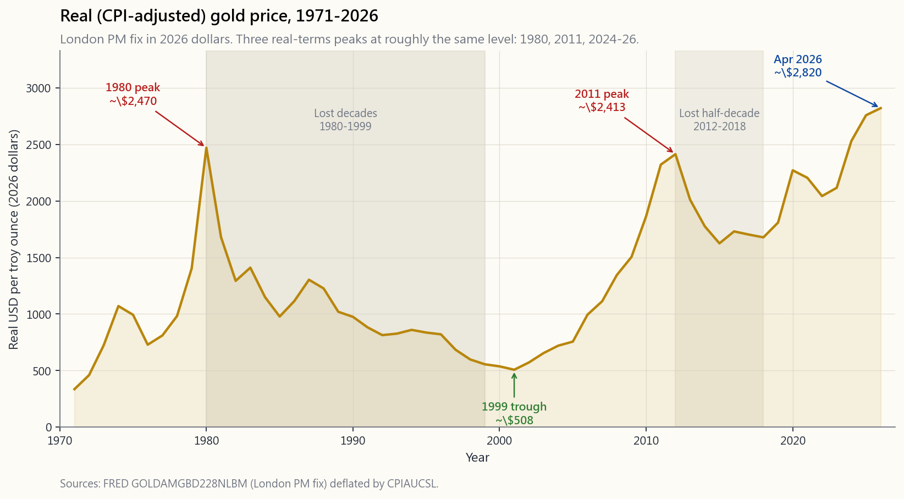
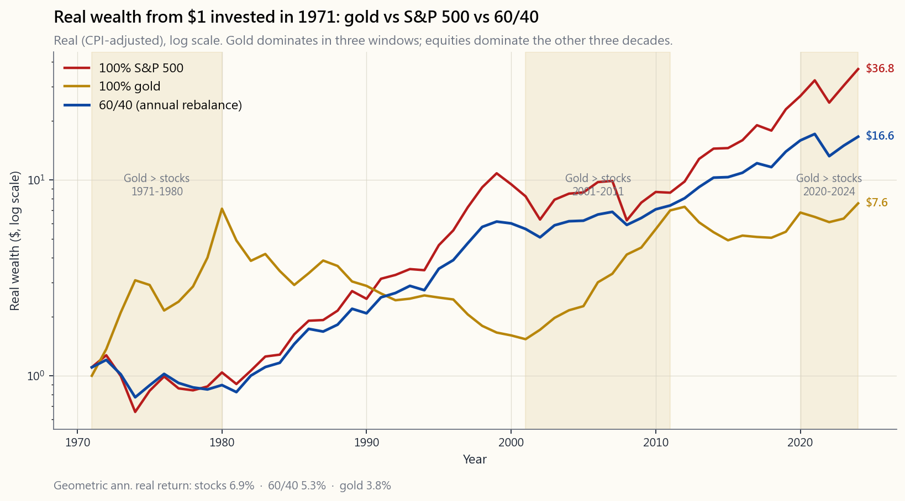
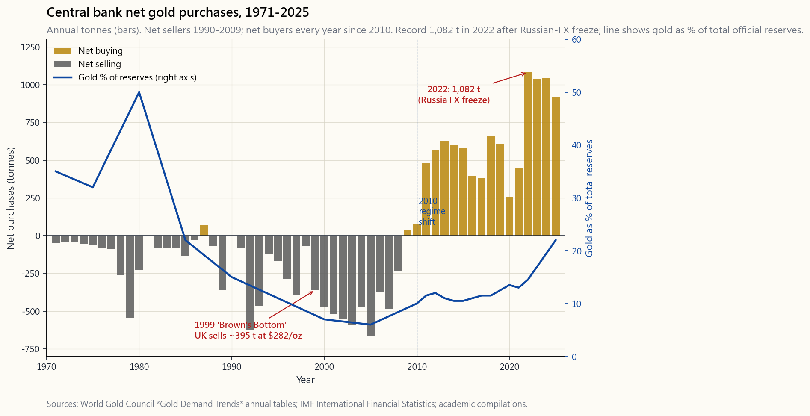
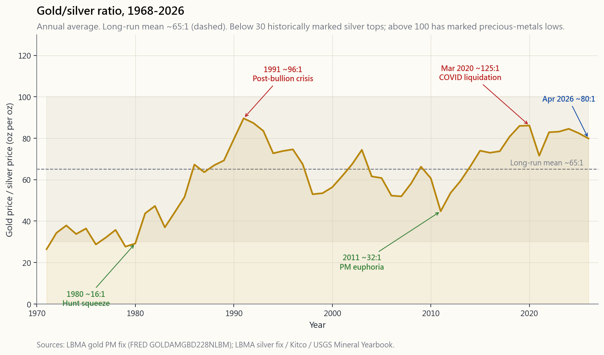
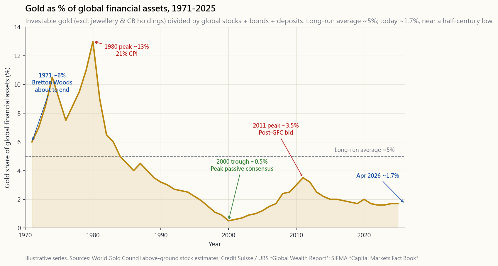

Week 6: Gold — The 5,000-Year Store of Value
1. Why This Is Important
Every textbook portfolio chapter eventually arrives at the same awkward question: should you own gold? And usually the answer is either an evangelical yes (the goldbug answer) or a dismissive no (the Bogleheads answer). Both are wrong because both are arguing about the wrong thing. Gold is not a stock. It is not a bond. It does not produce cash flow, will never pay you a dividend, and its "intrinsic value" — as J.P. Morgan testified to the Pujo Committee of the US House of Representatives in 1912 —
"Gold is money. Everything else is credit." — J.P. Morgan, House Banking & Currency Committee, 19 December 1912 (sworn testimony, Money Trust Investigation, p. 1084)
is exactly the same as the intrinsic value of every other store of value: consensus.
You need to think clearly about gold for five reasons.
means.** Stocks compound earnings. Bonds compound coupons. Gold compounds (almost) nothing. If gold is worth holding, the reason cannot be cashflow — it has to be the durability of belief that other humans will accept it as money in fifty years. That same logic applies to fiat dollars, to bitcoin, and to every currency that has ever existed. Gold is the laboratory for thinking about belief-priced assets.
Gold has crushed inflation in three windows (the 1970s, the 2000s, the 2020s) and gone nowhere for decades in between. If you do not understand when the hedge works, you will buy at a peak and sell at a trough — exactly what the average gold ETF investor has done since 2011.
buyer.** After two decades of net selling (1990–2008), official sector purchases turned positive in 2010 and accelerated sharply after the 2022 freezing of Russian FX reserves. The World Gold Council reports central banks bought a record 1,082 tonnes in 2022 and another 1,037 tonnes in 2023 — the two largest annual totals on record. This is a different marginal buyer than the 2011 ETF cycle, and it changes how you should think about the 2020s gold rally.
(GLD, IAU, GLDM, PHYS, MNT), gold futures, gold-mining equities, and physical coins are four very different exposures with four very different tax, fee, custody, and counterparty profiles. The default answer for a US-listed retail book is a physical-bullion ETF; everything else is a specialty tool.
pay a small lease rate to borrow your allocated gold, prime-broker desks accept gold as eligible collateral, and under the Basel III NSFR rules that took effect in 2021 (EU) and 2022 (UK), allocated physical gold is treated as a high-quality liquid asset for banks while unallocated gold carries an 85% required stable funding charge. That regulatory shift quietly altered the cost structure of the paper-gold market.
This lesson covers what gold actually is, the 5,000-year history behind the belief, when its inflation hedge has worked, the role of central banks, the silver-and-platinum-group cousins, why industrial commodities are a different beast, and the small toolkit a retail investor should actually use.
A note on what gold is not primarily about. Gold has real industrial demand (electronics, dentistry) and large jewellery demand — together roughly half of annual flow demand per the World Gold Council's Gold Demand Trends series. But the investment thesis for holding gold in a portfolio is overwhelmingly about monetary belief and reserve demand, not jewellery fashion or industrial usage. When the gold price moves $200 in a quarter, the marginal driver is almost always central banks, ETF flows, or real-rate moves — not necklaces.
2. What You Need to Know
2.1 A Brief 5,000-Year History of Gold as Money
The reason "gold = money" feels obvious is that humans have been running the experiment, more or less continuously, since the Bronze Age. A short tour:
- c. 2500 BC — Egypt and Mesopotamia. Gold rings and bars
- c. 600 BC — Lydia (modern western Turkey). King Croesus
- 49 BC – AD 300 — Roman aureus. A 7.8-gram gold coin
- AD 1252 — Florence's fiorino d'oro. A pure-gold coin
- 1717 — Britain's de facto gold standard. Sir Isaac Newton,
- 1944 — Bretton Woods. $35 per ounce, dollar convertible to
- 15 August 1971 — Nixon closes the gold window. Convertibility
Two takeaways for an investor in 2026. First, the current fiat era is historically unusual; every previous fiat regime ended in either restoration of metallic backing or hyperinflation. That does not predict the future, but it should temper anyone who treats fiat money as the natural state of affairs. Second, gold's "belief" is not a vibe — it is a 5,000-year continuous record of humans across every civilization independently selecting the same metal as the unit of last resort. That is the durability the chart below is implicitly pricing.
2.2 Why Gold Is Belief-Priced — and What "No Cashflow" Really Means
Stocks are claims on future earnings. Bonds are claims on future coupons. The discounted-cashflow framework that values both of them does not apply to gold because gold has no cashflow to discount. The price of gold is whatever the marginal buyer is willing to pay the marginal seller, and the marginal buyer's willingness to pay is set entirely by their belief that the next marginal buyer will pay at least as much.
This is not a slur. It is the same logic that prices the US dollar. A hundred-dollar bill produces no cashflow either. Its value is that the next person down the chain will accept it for $100 of goods. Voltaire's eighteenth-century one-liner captures the asymmetry:
**"Paper money eventually returns to its intrinsic value — zero."** — attributed to Voltaire, 1729
Gold's belief is 5,000 years old. The pure-fiat dollar's belief, in its current post-Bretton-Woods form, is younger than the Beatles. Bitcoin's belief is younger than the iPhone. **Every store of value rests on belief**; the only honest question is how durable the belief has been and how durable it is likely to remain.
Important caveat. Durability of belief is not the same as a guaranteed future return. Gold's 5,000-year record makes the belief extremely robust. It does not guarantee that the next ten years will look like any particular previous ten. Goldbugs who assume they will get the 1971–1980 return again because "gold always wins in inflation" are extrapolating one regime onto another. Treat the historical track record as a constraint on what is plausible, not as a forecast.
The practical implication of "no cashflow" is that gold cannot compound the way equities do. A diversified equity index delivered roughly 7% real per year over the long run because companies kept producing more goods, paying dividends, and buying back stock. Gold, over the long run, delivered roughly 1.0–1.5% real — slightly above inflation. It is *money that holds its value*; it is not capital that grows.
One important modern wrinkle on "no cashflow." Gold can in fact be lent out for a small yield. The London bullion market publishes the Gold Forward Offered Rate (GOFO) — the rate at which dealers will swap gold for dollars — and the implied gold lease rate is the difference between USD LIBOR/SOFR and GOFO. Bullion banks (HSBC, JPMorgan, UBS, ICBC Standard) borrow allocated bullion from large holders to satisfy short-term delivery and refining demand, paying a lease rate typically in the 0.1%–2% range, occasionally spiking higher in tight markets (it briefly went over 5% in early 2020 during COVID delivery chaos). That changes "no cashflow" to "very small cashflow if you are a large enough holder to access the wholesale market."
For retail investors, three things matter about this:
holding tonnes in an LBMA-recognised vault. The big physical gold ETFs do not lend out their bullion (GLD, IAU, GLDM, PHYS all explicitly prohibit it in their prospectuses). That is a feature, not a bug — see §2.10 on paper vs physical.
the prospectus before buying anything that promises a yield on gold. The yield comes from counterparty credit risk — when the bullion bank fails, your "gold" is an unsecured claim, not a bar.
will lend dollars against allocated bullion, typically at 80–90% loan-to-value. CME Group accepts gold as eligible margin collateral for futures positions. This makes gold a slightly "active" asset for sophisticated balance sheets — but only at scale.
Basel III and the quiet 2021–2022 regulatory shift. In June 2021 (EU) and January 2022 (UK), the Basel III Net Stable Funding Ratio (NSFR) rules came fully into force for the bullion market. Allocated physical gold held in a bank's vault qualifies as a high-quality liquid asset with no required stable funding penalty. Unallocated gold (paper claims on a pool, the form most over-the-counter gold trades take) carries an **85% required stable funding charge** — meaning the bank has to fund 85% of its unallocated gold book with long-term liabilities. The practical effect is that the cost of running the unallocated paper-gold market went up materially, and the cost of holding allocated physical gold went down. Several analysts (Alasdair Macleod at Goldmoney; Ronan Manly at BullionStar) have argued this is one of the structural reasons the gold price has held up better than the real-rate model alone would predict in 2022–2026. Whether you buy that thesis or not, the regulatory shift is real and is quietly reshaping the bullion market in the background.
2.3 The Inflation-Hedge Claim — When It Holds, When It Doesn't
The marketing claim is "gold hedges inflation." The historical record is more specific: **gold hedges sharp, persistent, and poorly-anticipated inflation, in regimes where real interest rates are falling.** When real rates are rising (Volcker 1981, the 2010s, briefly 2022 before the bond market broke), gold tends to go nowhere or down.
The chart below has two panels. The top panel plots the real (CPI-adjusted) USD gold price from 1971 — the year Nixon closed the gold window and floated the dollar — through April 2026. The bottom panel overlays headline CPI year-over-year against the real US 10-year yield, with the annual gold price change shown as bars, so you can see the relationship between the two macro variables and gold's response.

Three things should jump out from the top panel.
- Three real peaks at roughly the same level. The 1980, 2011,
- Two lost decades. From 1980 to 1999 the real price fell
- The rallies cluster around macro stress. 1971–80:
The bottom panel makes the real-rate relationship explicit. For most of the 1971–2020 sample, the simplest one-line model of gold is: real US 10-year yield down → gold up; real yield up → gold down. The mechanism is opportunity cost. If you can earn 2% real on a Treasury, the no-yield asset is expensive. If you can only earn -1% real on a Treasury, gold's zero yield suddenly looks competitive.
But real rates are the main driver, not the only driver. The 2022–2026 leg is the cleanest counter-example. Real 10-year yields rose from -1% to over +2% during this window — the textbook setup for gold to fall. Gold rose anyway, by roughly 70% in real terms. What broke the model: record central bank buying (see §2.5), geopolitical reserve diversification after the freezing of Russian FX reserves in February 2022, US fiscal deficits running near 7% of GDP outside of recession, and a growing market discount for currency-debasement risk. As Ray Dalio put it in his 2024 LinkedIn essay *Why I Like Gold More Than Bonds Now*, gold is a "non-credit, non-fiat money" whose demand rises when both the credit-money system and the geopolitical system are under stress — even if real rates are also rising. Use real rates as the primary lens, but do not be a one-factor investor.
2.4 Gold vs Stocks vs 60/40 — Regime by Regime
The traditional way to compare gold and stocks is one cumulative chart from 1971 to today. The problem with that picture is that the long-run line is dominated by whatever happened last decade — you cannot see when gold won and when it lost. The chart below splits the half-century into five regimes and starts every line at $1 at the beginning of each regime, so you can see the shape of returns inside each window. A fourth line shows a 60/25/15 portfolio — 60% S&P 500, 25% intermediate Treasuries, 15% gold — rebalanced annually, alongside the 60/40 stock/bond benchmark.

Read the panels regime by regime.
- 1971–1980 (stagflation, end of Bretton Woods). Gold up
- **1981–1999 (the Volcker disinflation and the great bull
- 2000–2011 (dot-com bust and GFC). Gold returned ~15% per
- 2012–2019 (post-GFC disinflation). S&P 500 ran. Gold flat
- 2020–2026 (COVID, reflation, central-bank gold cycle).
- Full 1971–2026 summary. S&P 500 has the highest end-value
What the regime panels make obvious is the case that Harry Browne built his Permanent Portfolio (1981) on, that Ray Dalio later refined as Bridgewater's All Weather (1996), and that Christopher Cole at Artemis Capital articulated again in 2020 with the Dragon Portfolio white paper *The Allegory of the Hawk and Serpent*: gold and equities are different exposures. Holding a meaningful slice of each tends to produce a better risk-adjusted outcome across multiple regimes than either alone.
A note on language. Calling this a "free lunch" is too strong. What the data shows is a **realized diversification benefit** — over the specific 1971–2026 sample, the rebalanced mix had a higher Sharpe ratio than its components. There is no guarantee future regimes will deliver the same benefit. The case for the gold sleeve is "robust across many historical regimes," not "guaranteed in any future one."
2.5 Central Banks — The Structural Marginal Buyer Since 2010
For most of the post-Bretton-Woods era, central banks were net sellers of gold. Western central banks unloaded reserves in the 1990s and early 2000s — the "Brown's Bottom" episode in 1999, when UK Chancellor Gordon Brown sold roughly half of British gold reserves at $282/oz, is the case study for selling at the lows. That regime ended in 2010. Every year since 2010, the official sector has been a net buyer.

The numbers from the World Gold Council's 2025 *Gold Demand Trends* publication:
- 2010–2021: average ~480 tonnes/year of net official sector
- 2022: 1,082 tonnes — the largest annual purchase since 1950.
- 2023: 1,037 tonnes.
- 2024: ~1,045 tonnes.
- 2025 (full year estimate): still tracking above 900 tonnes,
For context, the entire annual newly-mined gold supply is roughly 3,500 tonnes. Central banks alone have been absorbing ~25–30% of new mine supply in the recent cycle. That is structural marginal demand of a kind the 2011 ETF cycle did not have.
The strategic implication is straightforward. The 2010s gold cycle was driven by Western retail and ETF flows, and it exhausted itself when real rates rose in 2013–18. The 2020s gold cycle is driven by non-Western central banks who do not care about real rates because their alternative — holding more dollars and Treasuries — was demonstrated in 2022 to carry political risk they had not previously priced. That marginal buyer does not turn off when real rates rise. It might slow down, but it is unlikely to flip back to the net seller it was in the 1990s.
2.6 Silver and the Other Precious Metals
Gold's "purity" as a store of value comes from a property the others lack: gold has essentially no industrial demand. Less than 10% of annual gold flow goes to industry (mostly electronics and dentistry). The rest is jewellery, investment, and central bank reserves — i.e., monetary or quasi-monetary demand. That is why gold's price tracks belief and real rates rather than the global manufacturing PMI.
Silver, platinum, and palladium are different. They blend a monetary identity with a much larger industrial demand component, and that mix is exactly why they are more volatile and behave less cleanly as portfolio diversifiers.
Silver — the bimetallic ghost. From the late Roman Empire through the 19th century, silver was as much "money" as gold, and most of the world ran on a bimetallic standard. The British Crown's adoption of a de facto gold standard in 1717 (via Newton) and the US Coinage Act of 1873 (the "Crime of '73," demonetizing silver) were the two political events that ended silver's monetary role. William Jennings Bryan's "Cross of Gold" speech at the 1896 Democratic Convention was the last serious political fight to bring silver back. He lost. Industrial demand has carried silver's price ever since — today roughly 55% of silver demand is industrial (solar PV, electronics, brazing alloys), 25% is jewellery and silverware, and the residual ~20% is investment and coins.
The most-watched ratio is the gold-silver ratio — ounces of silver that buy one ounce of gold. Historically (Roman through 19th century) it sat in a 12:1–16:1 band, which is roughly the ratio of their crustal abundance. In the modern era it has ranged from ~15:1 (the 1980 Hunt brothers' silver squeeze peak) to over 120:1 (the COVID March-2020 spike). The chart below shows the full 1968–2026 history.

Two practical observations:
- The ratio mean-reverts but slowly and noisily. Silver bulls
- For a portfolio diversifier, gold is the cleaner instrument.
Platinum and palladium — the autocatalyst metals. Both are roughly 80% industrial-demand-driven, dominated by autocatalysts (palladium for petrol vehicles, platinum for diesel and hydrogen). Their prices track auto-production cycles, emissions regulations, and South African / Russian mine supply (those two countries produce ~75% of platinum-group metal output). They are not stores of value in any meaningful sense — palladium fell 65% in nine months in 2023 after the EV-driven structural de-rating finally caught up with the price. Treat them as specialty industrial-cycle bets, not as gold substitutes.
The investment-only takeaway: when the lesson talks about a "permanent metals sleeve," it means gold. Silver, platinum, and palladium can have a place in a tactical book but not in the permanent one.
2.7 A Note on Industrial Commodities — Why They're Different from Gold
Oil, copper, wheat, soybeans, natural gas — these are inputs to production, not money. They differ from gold in three structural ways.
oil hits $130 in 2008 or 2022, US shale wakes up, supply rises, and the price falls back toward the $50–$70 marginal-cost band. When oil drops to $30, marginal producers shut in, supply falls, price rises. Over a long horizon, an industrial commodity does not compound; it oscillates around a slowly drifting cost curve.
in extraction and farming has historically beaten demand growth. Real oil prices in 2026 are roughly the same as in 1973. Real wheat prices have fallen over a century. The "commodity supercycle" thesis is real for individual decades but not for a buy-and-hold compounder. Jeremy Grantham's GMO research papers on long-run real commodity prices are the standard reference.
cycle.** Owning a basket of industrial commodities is roughly owning a leveraged short on the dollar plus a leveraged long on global GDP. It is a factor exposure, not a diversifier.
For US retail investors, the implication is that industrial commodities are trades (positions sized for a specific macro view) and not holdings (permanent allocations). The mechanics of futures-based commodity ETFs — contango, roll cost, the USO case study — are covered in detail in **Week 39: Commodity Futures and Roll Yield**, where they belong. For this lesson, the takeaway is just that physical-bullion gold ETFs do not share that structural problem (see §2.8) — and that is the specific reason gold is investable as a passive long-term holding while most other commodities are not.
2.8 The Investable Toolkit — Bullion ETFs vs Gold Futures vs Coins
Per the US-only investable mandate, here is the gold-specific shortlist for a US-listed retail book.
| Vehicle | Type | Expense | Notes |
|---|---|---|---|
| GLD | US-listed physical-bullion ETF (trust) | 0.40% | Largest, most liquid, deepest options chain |
| IAU | US-listed physical-bullion ETF (trust) | 0.25% | Cheaper than GLD, slightly less liquid |
| GLDM | US-listed physical-bullion ETF (trust) | 0.10% | Cheapest US bullion ETF; smaller options market |
| SGOL | US-listed physical-bullion ETF (Swiss vault) | 0.17% | Bullion held in Zurich, not London/NY |
| BAR | US-listed physical-bullion ETF | 0.18% | Allocated, audited monthly |
| IAUM | US-listed physical-bullion ETF | 0.09% | iShares' answer to GLDM |
| GDX | Gold mining equities | 0.51% | Levered, operational risk; ordinary stock tax treatment |
| GDXJ | Junior gold miners | 0.52% | Higher beta, much higher idiosyncratic risk |
| /GC futures | CME 100-oz gold futures | n/a (margin) | Section 1256 60/40 tax treatment; full physical-delivery contract |
| MGC futures | CME 10-oz micro gold futures | n/a (margin) | Same Section 1256 treatment, smaller contract size |
For investors with access to Canadian listings (Interactive Brokers, Questrade, most international brokers), the toolkit expands materially:
| Vehicle | Type | Expense | Notes |
|---|---|---|---|
| PHYS | Sprott Physical Gold Trust (NYSE Arca / TSX) | 0.41% | Closed-end fund, allocated bullion, physical redemption available in 400-oz bars |
| KILO | Sprott Physical Gold Trust (kilobar) | 0.35% | Same Sprott trust structure, kilobar redemption |
| MNT | Royal Canadian Mint Gold ETR (TSX) | 0.35% | Receipts backed 1:1 by allocated bullion in RCM vaults; physical redemption |
| MNS | Royal Canadian Mint Silver ETR (TSX) | 0.45% | Silver equivalent of MNT |
| CGL.C | iShares Gold Bullion ETF, CAD-hedged (TSX) | 0.55% | CAD-hedged exposure for Canadian-dollar accounts |
The Sprott (PHYS) and Royal Canadian Mint (MNT) products are worth flagging specifically because they are the two US-tax-friendly ways for an American holder to escape the 28% collectibles rate (see §2.11 on tax treatment): both qualify for Passive Foreign Investment Company (PFIC) QEF election treatment, which converts gains to long-term capital gains rates when properly elected on Form 8621 each year. The QEF election is real paperwork — most retail investors will not bother — but it exists and is used by sophisticated holders.
Gold futures versus physical-bullion ETFs. These are two very different exposures even though both reference the same spot price.
- Bullion ETFs (GLD, IAU, GLDM, PHYS, MNT) hold *physical
- Gold futures (/GC, MGC) are dated contracts. The holder
For a buy-and-hold gold sleeve, a physical-bullion ETF is the right tool. For a tactical or leveraged gold position, gold futures or options on GLD are usually better. The two coexist for different jobs.
Physical coins and bars. For investment purposes the mainstream coin products (American Gold Eagle, Canadian Maple Leaf, South African Krugerrand, Austrian Philharmonic) trade at 3–6% premium to spot, plus storage and insurance (0.5%/year for an insured commercial vault) and a 1–3% bid-ask on resale. The all-in friction wipes out the GLD/IAU expense advantage over any holding period under 10–15 years. Physical is the right answer only if you have a specific use case that paper gold cannot serve — primarily off-grid jurisdictional risk or estate planning across multiple legal systems.
2.9 Paper Gold vs Physical Gold — Allocated, Unallocated, and Lending Risk
Not all "gold" is gold. The bullion market distinguishes three custody models:
- Allocated, segregated, audited. Specific bars (with serial
- Allocated but pooled. A specified weight of gold is yours,
- Unallocated. A book-entry credit for a quantity of gold
Why this matters for ETF selection. Read the prospectus for any gold ETF you are considering and check three things:
IAU with JPMorgan, GLDM with HSBC, SGOL with JPMorgan in Switzerland) all hold allocated gold and disclose bar lists. PHYS and MNT also hold allocated and offer physical redemption, which is the strongest possible form of "I really own this."
bullion? GLD, IAU, GLDM, SGOL, PHYS, and MNT all explicitly prohibit lending. Some smaller "yield-enhanced" gold products do lend — typically those that quote a positive yield on a non-dividend-paying asset. The yield comes from counterparty exposure to bullion banks. There is no large, broadly-marketed US ETF that lends its gold en masse; the risk lives more in unallocated wholesale products and in small-issuer "yield-enhanced" structures aimed at hedge funds.
recognised firm (Inspectorate International, Bureau Veritas). The bar list should be public.
The general rule: **for a retail core gold sleeve, pay the few extra basis points to hold an ETF that owns allocated, unlent, audited bullion**. The cost difference between GLDM at 10 bps and a hypothetical "yield-enhanced" product at 0 bps is trivial relative to the counterparty risk you take on by accepting the yield.
2.10 Sizing — How Much Gold Should You Own?
The honest answer is more than 0%, less than 100%, and the exact number depends on your view of the next ten years' regime. Three reference points from named investors:
- *Harry Browne, Fail-Safe Investing* (1981) — Permanent
- **Ray Dalio, Bridgewater Associates — All Weather (1996,
- **Rick Rule (former CEO Sprott US Holdings) — recurring
How big is the global gold market relative to financial assets? The chart below puts the current allocation in context.

Three observations from the chart that frame the sizing question:
- The long-run average is around 5%. In other words, if every
- The current global allocation is roughly 1.7%. Investible
- The 1980 peak hit ~13%. A return to that "panic" level,
For a US retail investor, three honest sizing answers:
- 0% is the Bogleheads answer. It is internally consistent
- 5–15% is the institutional consensus — Harry Browne's
- 20%+ is the goldbug answer. It is internally consistent
The interactive at the end of this lesson lets you slice the historical record by inflation regime to see when the hedge actually paid off and when it did not.
2.11 Tax Treatment and Non-US Investor Notes
US investors. GLD, IAU, GLDM, SGOL, BAR, IAUM are all structured as grantor trusts holding a "collectible," which means **long-term capital gains are taxed at the 28% collectibles rate** in the US, not the standard 15–20% LTCG rate. GDX miners, by contrast, are ordinary stock and qualify for the standard rates plus qualified dividends.
There are three honest ways for a US investor to mitigate the 28% rate, each with caveats:
IRA, traditional IRA, 401(k)). This is by far the cleanest and most-recommended approach. Most retail brokers permit GLD, IAU, GLDM, PHYS inside an IRA.
election.** As Canadian-domiciled funds, they qualify as Passive Foreign Investment Companies (PFICs) for US tax purposes. With a QEF election filed annually on Form 8621, gains are treated as long-term capital gains at 15–20% rather than collectibles at 28%. The election creates ongoing paperwork and requires the fund to provide annual statements (PHYS does; verify with each fund). Talk to a tax preparer familiar with PFIC rules before relying on this.
spot.** Because the option contract is a separate security, the holding-period rules apply to the option itself, not to the underlying trust units. Long-dated calls (LEAPS) can be used to express a directional view on GLD with capital-gains tax treatment on the option contract. However — and this is important — equity options on GLD are not Section 1256 broad-based-index options; they are equity options taxed under the standard rules with wash-sale, straddle, exercise, and assignment complications. Do not assume options "automatically solve" the 28% collectibles issue. They are a tool for the right situation, not a blanket workaround. Anyone running meaningful size in this structure should work with a tax preparer familiar with section 1234, section 1092 straddle rules, and the specific GLD trust mechanics.
There is also one common myth worth correcting: a few US states (notably Texas, Wyoming, Utah, Oklahoma, Louisiana, and several others) have passed legislation declaring gold and silver specie to be legal tender for state purposes, and exempt those metals from state sales tax. That legislation is real — Texas opened a state bullion depository in 2018 — but it operates only at the state-tax level. **Federal capital gains treatment is unchanged**, and the 28% collectibles rate still applies on realized gains regardless of which state you live in.
Non-US investors — the picture is very different.
- Hong Kong. No capital gains tax and no GST on physical gold
- Taiwan. No capital gains tax on securities. Bank gold
- Mainland China. Cross-border gold ETF access is restricted
- Estate-tax warning for non-US holders. US-listed ETFs
3. Common Misconceptions
1. "Gold has intrinsic value." It doesn't. Neither does the dollar, the euro, sterling, or bitcoin. All five are belief-priced. The most concise statement of the point is John Maynard Keynes's 1924 line about gold being "a barbarous relic" — by which he did not mean gold was worthless, but that all monetary anchors are social conventions and treating any one of them as metaphysically "real" is a mistake. Five thousand years of belief makes gold's convention extremely durable; it does not make it intrinsic. The honest framing is that gold is a Schelling point in monetary coordination — humans across every civilisation independently selected the same metal. That is robust, and it is also still just consensus.
2. "Gold always rises with inflation." It rises with *poorly- anticipated, sustained* inflation, especially when accompanied by falling or negative real rates. In a Volcker-style "rates ahead of inflation" regime (1980–82, parts of 1994, briefly 2022 before the bond market broke), gold falls in nominal terms even while CPI is high — because the opportunity cost of holding a non-yielding asset has gone up faster than the inflation it is supposedly hedging. The right one-line framing: gold hedges *real-rate suppression*, not inflation per se. The two often coincide in crisis regimes, which is why the "gold = inflation hedge" shortcut is approximately right most of the time and exactly wrong in the windows that matter most.
3. "Gold is a bad investment because it has no yield." Gold is a bad cashflow asset — it is not capital that compounds. Treating it as a bond substitute is a category error. As a portfolio diversifier with negative real-rate sensitivity and positive crisis-regime correlation, its long-run Sharpe addition to a 60/40 has been positive across the full 1971–2026 record (see §2.4). Warren Buffett's 1998 Harvard speech mocking gold (you dig it up, ship it across the world, dig another hole, put it in, then "pay people to stand around guarding it") is the canonical version of this misconception. Buffett is one of the greatest equity capital allocators of all time and his point about cashflow superiority is correct. He is not, however, a portfolio constructor managing for multi-regime survival — Berkshire holds ~$300B in cash and Treasuries instead, which is its own form of non-yielding-relative-to-equity drag for a different reason.
4. "Gold miners are leveraged gold." They are levered to the gold price minus all-in sustaining costs (AISC) and carry operational risk, country/jurisdictional risk (many large miners operate in regime-risky jurisdictions like Russia, Mali, the DRC), hedging-program risk (miners that hedged forward sales in the late 1990s missed most of the 2001–2011 rally — Barrick Gold's hedge book is the textbook case), management capital-allocation risk, and equity-market beta that can dominate gold beta during broad sell-offs. The empirical record is striking: GDX has underperformed GLD over most multi-decade windows since GDX inception in 2006, despite the theoretical operating leverage. Picking individual miners (Newmont, Agnico Eagle, Franco-Nevada on the streaming side) has historically worked better than the GDX index, but that is stock-picking risk, not gold exposure.
5. "Bitcoin replaces gold." Bitcoin's belief is 16 years old (Satoshi's white paper, October 2008). Gold's is 5,000. They may both belong in a portfolio — many investors run both as small parallel sleeves — but the substitution claim ignores the durability gap. The relevant test is not "what has bitcoin done in the last decade" (during which it has obviously crushed gold). The relevant test is "what is the conditional-on-failure outcome, and how confident are we that the belief endures across the next multi-generational regime." On those questions, gold has the empirical record and bitcoin has only an asymptote. Treat them as two different positions, not two implementations of the same position.
6. "You should own a basket of commodities for diversification." Industrial commodities (oil, copper, base metals, agricultural softs) are pro-cyclical risk assets, not diversifiers. They correlate with global growth, the dollar, and equity beta in any period long enough to matter. Gold is the diversifier; oil and copper are factor bets on global growth. The DBC and PDBC diversified-commodity ETFs are not substitutes for gold.
7. "GLD costs the same as buying physical." GLD has a 0.40% annual fee, GLDM is 0.10%, IAU is 0.25%, and bid-ask is small (typically 1–3 bps for a retail order). Coins from a dealer carry a 3–6% premium plus storage and insurance (roughly 0.5%/ year for an insured commercial vault) plus a 1–3% bid-ask on resale. For paper exposure, GLD/IAU/GLDM win on cost over any horizon under ~10 years. For doomsday physical-delivery use cases, the comparison does not apply because the products are not interchangeable.
8. "The 1980 high was the all-time high." Not in real terms. The 1980 peak of $850 nominal is roughly $2,400 in 2026 dollars, which is roughly the same level as today. That observation matters because it reframes the "gold is at all-time highs" media narrative — in real terms, gold spent most of 2024 *just back to* its 1980 high after a 44-year wait. Always use real-terms charts when judging "is gold expensive."
9. "Central banks selling gold means gold is dead." Central banks were net sellers every year from 1990 through 2008, and during that exact window gold was weak in real terms. They have been net buyers every year since 2010 — a regime change discussed in §2.5 — and during that window gold has been strong. Central bank flow is a price-setting trade, not a sign of irrelevance. The Bank of England's "Brown's Bottom" sale (1999, 395 tonnes at $282/oz) is the textbook cautionary tale: the official sector sold at the bottom and bought back at the top, which is what official-sector flows tend to do during regime changes.
10. "Gold has too small a market to matter." The above-ground investible gold stock is approximately 213,000 tonnes worth roughly $20 trillion at April 2026 prices. That is meaningfully larger than the global high-yield bond market and roughly half the size of the US municipal bond market. Daily LBMA OTC gold trading volume is ~$160 billion, comparable to the daily trading volume of US 10-year Treasuries. Gold is one of the largest and most liquid asset classes on the planet — the "small market" claim usually conflates flow (annual mine supply ~3,500 tonnes, ~$300B/year) with stock (the existing 213,000 tonnes), which are two different things.
11. "Gold is a useless rock that pays no income." As §2.2 discusses, gold can be lent through the bullion-bank market for a small lease yield, and it is accepted as collateral by prime brokers and the CME. Under Basel III's 2021–22 NSFR implementation, allocated physical gold qualifies as a high- quality liquid asset for bank balance sheets. The "useless rock" framing is a half-century out of date.
12. "Gold and silver move together." They have positive long- run correlation but the relationship is unstable and silver is materially more volatile. Silver's industrial-demand share (~55%) makes it as much a tactical industrial-cycle bet as a monetary asset. The gold-silver ratio (§2.6) has ranged from 17:1 to 125:1 in the modern era — that is not "moving together."
4. Q&A Section
Q1: If gold has no cashflow, how can I justify owning it? A: The same way you justify holding US dollars in a savings account. You are not holding either for cashflow; you are holding them as a store of purchasing power and an option on tail-event demand. Gold has held purchasing power across regimes that flattened multiple national currencies (Weimar, Argentina, Zimbabwe, Venezuela, Lebanon — pick your decade). That is the value proposition. It is small relative to equity compounding, which is exactly why a 5–15% allocation is the institutional consensus for most investors.
Q2: Is bitcoin a better gold? A: Maybe in 50 years; not yet. Bitcoin's belief is 16 years old. Gold's is 5,000. Bitcoin has higher upside if the belief endures — but the conditional-on-failure outcome is materially worse than gold's, because gold has 5,000 years of cross-civilisational empirical evidence and bitcoin has only Satoshi's white paper and a series of price charts. Running both as small parallel sleeves is more honest than picking one. Many of the "gold versus bitcoin" debates conflate "which has done better in the last decade" (bitcoin, by a mile) with "which is more likely to still be money in 2075" (gold, by a similarly wide margin). The two questions have different answers.
Q3: What is the right benchmark for "did gold work"? A: Real interest rates, not nominal CPI. The cleanest one-line test: did real 10-year yields fall during the period? If yes, gold should have risen, and if it did, the real-rate hedge worked. Use FRED series DFII10 for a quick read. But — referring back to §2.3 — the 2022–2026 leg shows that the real-rate model is the primary driver, not the only driver. Central bank flow, geopolitical reserve diversification, and fiscal-deficit risk premia all matter at the margin.
**Q4: Why does GLD use a 28% collectibles tax rate, and is there a way around it?** A: The IRS classifies gold bullion as a collectible regardless of whether you hold a coin or a unit of a grantor trust that holds bullion on your behalf. Three honest workarounds, none of them automatic:
account. Cleanest and most-recommended.
filed QEF election (Form 8621). Real paperwork; only worth it for meaningful size.
spot GLD — but be aware these are equity options under standard rules (wash sales, straddles, exercise/assignment all apply), not Section 1256 broad-based-index options. Do not assume options "automatically solve" the 28% issue.
Note on the "states that don't tax gold" claim you may have seen: about a dozen US states (Texas, Wyoming, Utah, Oklahoma, Louisiana and others) have passed legislation declaring gold and silver legal tender for state purposes and exempt from state sales tax — Texas opened a state bullion depository in 2018. That legislation is real but operates only at the state-tax level. Federal capital gains treatment is unchanged, and the 28% collectibles rate still applies regardless of which state you live in. Anyone telling you "gold is tax-free in Texas" is mixing up state sales tax (true) with federal capital gains tax (unchanged).
Q5: Should I buy physical coins or a bullion ETF? A: For investment purposes, GLDM, IAU, or PHYS. For doomsday preparedness or estate planning across multiple jurisdictions, physical coins with off-site storage. The two are different products. The premium on coins (3–6%) plus storage (~0.5%/year for an insured commercial vault) plus the bid-ask on resale wipes out the structural cost advantage of physical over many years.
Q6: What about gold mining stocks? A: GDX is a leveraged-but-noisy gold proxy. It has higher beta to gold but also picks up operational risk, country risk, hedging- program risk, and management risk. Over the long run, GDX has underperformed GLD despite higher operating leverage on paper — see misconception #4 above. If you want gold exposure, own gold; if you want a tactical trade on gold moving sharply higher, GDX is a higher-torque short-duration position, not a long-term holding.
Q7: How do I use options on GLD for tax efficiency? A: Three common structures: (1) covered calls on existing GLD to generate income with a price ceiling — covered in detail in Week 27: Covered Calls; (2) cash-secured puts to accumulate GLD at lower prices — Week 28; (3) deep-ITM long-dated GLD calls (a "stock-replacement" structure) to hold gold exposure with less capital deployed — Week 38: LEAPS Replacement. The tax angle is not that options magically dodge the 28% collectibles rate — exercise into the underlying inherits the trust's tax treatment. The angle is that the *option contract itself* is taxed under standard equity-option rules with its own holding period, so position management (rolling, closing, restriking) creates taxable events at standard capital-gains rates rather than at 28%. The wash-sale, straddle, and constructive-sale rules all apply. Anyone running meaningful size in this structure should work with a tax preparer familiar with section 1234, section 1092, and the GLD-specific mechanics.
Q8: When should I trim my gold sleeve? A: When real 10-year yields are above +2% and rising, when central bank net buying slows materially below the 2022–2024 1,000-tonnes-per-year pace, and when the gold-to-S&P 500 ratio has compressed below its 20-year median. None of those conditions hold in April 2026. The "permanent allocation" is permanent; the size is what you adjust at the margin in extreme regime windows.
Q9: Where does this lesson connect to the rest of the course? A: Week 4 introduced the 60/40 framework, and Week 5 covered the bond leg in depth. This lesson adds gold as a third asset that diversifies both stocks and bonds in regimes where bond/equity correlation breaks down (2022 being the textbook example). Week 11 covers rebalancing as part of the behavioural discipline lesson — it is the mechanic that turns the gold/stock/bond mix into the realized diversification benefit shown in §2.4. Week 15 puts the multi-asset book together, and Week 27 (Covered Calls), Week 28 (Cash-Secured Puts), and Week 38 (LEAPS Replacement) cover the option overlays that the §2.11 tax discussion alludes to. Week 39 covers commodity futures, contango, and the USO case study in detail.
第六週：黃金——五千年的價值儲存
1. 為何此課題至關重要
每本教科書的投資組合章節，最終都會觸及同一個令人尷尬的問題：你應該持有黃金嗎？通常答案不是狂熱的「是」（黃金迷的答案），就是輕蔑的「否」（Bogleheads的答案）。兩者皆錯，因為兩者都在爭論錯誤的問題。黃金不是股票，也不是債券。它不產生現金流，永遠不會向你派發股息，而其「內在價值」——正如摩根大通（J.P. Morgan）於1912年在美國眾議院普喬委員會（Pujo Committee）的宣誓證詞中所言——
「黃金就是貨幣，其餘一切皆是信貸。」 ——摩根大通，眾議院銀行及貨幣委員會，1912年12月19日（宣誓證詞，《貨幣信託調查》，第1084頁）
與任何其他價值儲存工具的內在價值完全一樣：共識。
你需要清晰思考黃金的五個原因。
本課涵蓋黃金的真正本質、支撐其信念的五千年歷史、通脹對沖何時奏效、中央銀行的角色、白銀及鉑族金屬的相關性、工業商品為何是另一回事，以及散戶投資者實際應使用的小型工具組合。
關於黃金並非主要為何物的說明。 黃金確實有真實的工業需求（電子、牙科）及龐大的珠寶需求——據世界黃金協會《黃金需求趨勢》系列報告，兩者合計約佔年度流量需求的一半。但在投資組合中持有黃金的投資論點，絕大多數關乎貨幣信念與儲備需求，而非珠寶時尚或工業用途。當黃金價格在某季度波動200美元時，邊際驅動因素幾乎總是中央銀行、交易所買賣基金資金流向或實際利率變動——而非項鍊。
2. 你需要了解的知識
2.1 黃金作為貨幣的五千年簡史
「黃金等於貨幣」之所以顯而易見，是因為人類幾乎從未間斷地進行這項實驗，自青銅時代便已開始。簡短回顧：
- 約公元前2500年——埃及與美索不達米亞。 金環與金條在神廟經濟中作為記賬單位流通。黃金之所以被選中，是因為它不會腐蝕，可以按重量鑑定，且足夠稀有，使少量便能承載巨大價值。
- 約公元前600年——呂底亞（今土耳其西部）。 克羅伊斯王（King Croesus）發行第一批標準化金銀（琥珀金）硬幣——即最早的真正鑄幣。大英博物館的呂底亞錢幣收藏，是貨幣歷史的奠基文物。
- 公元前49年至公元300年——羅馬奧里烏斯（aureus）金幣。 一枚7.8克的金幣支撐羅馬商業達三個世紀。公元250年後歷代皇帝為籌措軍費而削減含金量，是「即使以金屬為本位的法定貨幣亦可失敗」的教科書範例。
- 公元1252年——佛羅倫斯的弗羅林金幣（fiorino d'oro）。 一種純金硬幣成為文藝復興時期歐洲的儲備貨幣，梅第奇銀行的通信網絡以此運作。
- 1717年——英國事實上的金本位制。 皇家鑄幣局局長艾薩克·牛頓爵士（Sir Isaac Newton）將金銀比率定於使黃金成為主導標準的水平。古典金本位制從1717年有效運行至1914年。
- 1944年——布雷頓森林體系（Bretton Woods）。 每盎司35美元，美元可由外國中央銀行兌換黃金，所有其他貨幣與美元掛鉤。該體系運行了27年。
- 1971年8月15日——尼克遜關閉黃金窗口。 可兌換性終止，黃金自由浮動。黃金五千年的貨幣角色正式終結，全球金融體系進入有史以來首個純法定貨幣時代——如今已是第55個年頭。
2.2 為何黃金以信念定價——「無現金流」的真正含義
股票是對未來盈利的索取權，債券是對未來票息的索取權。對兩者均適用的現金流折現法，不適用於黃金，因為黃金沒有可供折現的現金流。黃金的價格，是邊際買家願意向邊際賣家支付的金額，而邊際買家的支付意願，完全取決於他們相信下一個邊際買家至少會支付同等金額。
這並非貶義，而是與美元定價相同的邏輯。一張一百美元的鈔票同樣不產生現金流，其價值在於鏈條上的下一個人會以100美元的商品接受它。伏爾泰（Voltaire）十八世紀的名言精準捕捉了這種不對稱性：
「紙幣最終會回歸其內在價值——零。」 ——歸因於伏爾泰，1729年
黃金的信念已有五千年歷史。純法定美元在其後布雷頓森林形式下的信念，比披頭四樂隊（Beatles）更年輕。比特幣的信念，比iPhone更年輕。每一種價值儲存工具都建立在信念之上；唯一誠實的問題是：這種信念持續了多久，以及它未來可能維持多久。
重要警示。 信念的持久性並不等同於有保證的未來回報。黃金五千年的記錄，使其信念極為穩固，但並不保證未來十年會與任何特定的過去十年相同。那些因「黃金在通脹中永遠勝出」而假設能再次獲得1971至1980年回報的黃金迷，是在將某一個制度的經驗套用到另一個制度上。應將歷史記錄視為合理預期範圍的限制條件，而非預測。
「無現金流」的實際含義，是黃金無法像股票那樣複利增長。分散投資的股票指數，長期每年實現約7%的實際回報，因為企業不斷生產更多商品、派發股息並回購股份。而黃金長期僅實現約1.0至1.5%的實際回報——略高於通脹。它是保值的貨幣，而非增值的資本。
「無現金流」在現代有一個重要的細節。 黃金實際上可以借出以賺取小額收益。倫敦金銀市場協會（London Bullion Market）公佈黃金遠期報價利率（GOFO）——交易商將黃金與美元互換的利率——而隱含黃金租賃利率即為美元LIBOR/SOFR與GOFO之間的差額。黃金銀行（匯豐、摩根大通、瑞銀、工銀標準）向大型持有人借入指定金條，以滿足短期交割及提煉需求，支付的租賃利率通常在0.1%至2%之間，在市場緊張時偶有大幅飆升（2020年初COVID交割混亂期間曾短暫超過5%）。這將「無現金流」改變為「若你是足夠大的持有人，可以進入批發市場，則有極小的現金流」。
對散戶投資者而言，有三點值得注意：
《巴塞爾協議三》及2021至2022年悄然發生的監管轉變。 2021年6月（歐盟）及2022年1月（英國），《巴塞爾協議三》淨穩定資金比率（NSFR）規則對黃金市場全面生效。存放於銀行金庫的指定實物黃金被列為優質流動資產，無需繳納穩定資金附加費。非指定黃金（場外交易中最常見的黃金紙面索取權形式）則承擔85%的必要穩定資金費用——即銀行必須以長期負債為其非指定黃金賬簿的85%提供資金。實際效果是，運營非指定紙黃金市場的成本大幅上升，而持有指定實物黃金的成本則下降。部分分析師（Goldmoney的Alasdair Macleod；BullionStar的Ronan Manly）認為，這是2022至2026年間黃金價格表現優於純實際利率模型預測的結構性原因之一。無論你是否認同這一論點，監管轉變是真實存在的，正在悄然重塑黃金市場的背景結構。
2.3 通脹對沖論點——何時有效，何時失靈
行銷說法是「黃金對沖通脹」。歷史記錄則更為具體：黃金對沖的是急劇、持續且超出預期的通脹，且必須處於實際利率下行的制度之中。 當實際利率上升時（沃爾克1981年、2010年代、2022年短暫的債券市場崩潰前），黃金往往毫無寸進甚至下跌。
下圖分為兩個面板。上方面板繪製1971年（尼克遜關閉黃金窗口並讓美元浮動之年）至2026年4月，以實際（經CPI調整）美元計的黃金價格。下方面板疊加了標題CPI同比數據與美國10年期實際收益率，並以柱狀圖顯示年度黃金價格變動百分比，以便觀察兩個宏觀變量與黃金反應之間的關係。
從上方面板可以看出三點。
- 三個實際高峰處於大致相同水平。 1980年、2011年及2024至26年的高點，以2026年美元計均介乎2,200至2,500美元之間。這種重複令人矚目——一種解讀是，存在一個「邊際需求上限」，超過此水平後，黃金相對於其他通脹對沖工具（抗通脹債券、房地產、商品）而言足夠昂貴，邊際買家便會退場。將此視為工作假設而非既定規律。三個數據點不足以構成一個制度。
- 兩個失落十年。 從1980至1999年，實際價格下跌近80%。從2012至2018年，損失約40%。在這些窗口期間持有黃金，考驗了每一位黃金迷的信念。
- 反彈集中於宏觀壓力時期。 1971至80年：滯脹、石油危機、布雷頓森林體系終結。2001至11年：美元疲軟、全球金融危機、歐元區危機、利率趨近零。2019至26年：COVID流動性、後疫情消費物價指數衝擊、中央銀行作為儲備多元化加速買入。
但實際利率是主要驅動因素，而非唯一因素。 2022至2026年這段走勢是最明顯的反例。這一窗口期間，10年期實際收益率從-1%升至+2%以上——教科書式的黃金下跌背景。然而黃金仍然上漲，以實際價值計漲幅約達70%。打破模型的因素包括：創紀錄的中央銀行購買（見第2.5節）、2022年2月俄羅斯外匯儲備被凍結後的地緣政治儲備多元化、美國財政赤字在非衰退時期接近本地生產總值的7%，以及市場對貨幣貶值風險日益增加的折現。正如瑞·達里奧（Ray Dalio）在其2024年領英文章《為何我現在比債券更喜歡黃金》中所言，黃金是「非信貸、非法定貨幣的貨幣」，當信貸貨幣體系與地緣政治體系同時承壓時，其需求便會上升——即使實際利率同時上升亦然。以實際利率作為主要分析框架，但切勿成為單一因素投資者。
2.4 黃金對比股票對比六四分配——按制度比較
傳統比較黃金與股票的方式，是從1971年至今的單一累計圖。這張圖的問題，是長期走勢線被最近十年發生的事主導——你看不出何時黃金勝出、何時黃金落敗。下圖將這半個世紀分為五個制度，並讓每條線在各制度開始時均從1美元起步，以便觀察每個窗口內的回報形態。第四條線顯示一個六二五一五投資組合——60%標普500、25%中期國債、15%黃金——每年再平衡，與股票/債券六四分配基準並列比較。
按制度逐一解讀面板。
- 1971至1980年（滯脹期，布雷頓森林體系終結）。 黃金名義漲幅約16倍，實際漲幅約5倍。標普500實際價值基本持平。六四分配損失了實際價值。六二五一五投資組合最終明顯優於六四分配，幾乎完全源於黃金持倉的貢獻。這是黃金發揮作用的制度。
- 1981至1999年（沃爾克通脹下行期及大牛市）。 標普500每年實際複利增長約14%。黃金實際損失約80%。六四分配以較低波動性與股票齊頭並進。六二五一五投資組合因黃金拖累而遜於六四分配——每年約80至100個基點。這是黃金令你付出代價的制度。
- 2000至2011年（科技股泡沫破裂及全球金融危機）。 黃金複利年回報約15%。標普500在整個窗口期大致持平（「失落十年」）。六四分配優於100%股票。六二五一五再次跑贏六四分配——黃金是制勝持倉。
- 2012至2019年（後全球金融危機通脹下行期）。 標普500奔馳向上，黃金持平至下跌，六四分配回歸。六二五一五小幅落後六四分配。
- 2020至2026年（COVID、再通脹、中央銀行黃金週期）。 股票大致翻倍，黃金大致翻倍。六四分配在2022年創下有紀錄以來最差年份（股票與債券同時下跌）。六二五一五在2022年的跌幅明顯較小，因為黃金在股票與債券下跌時上漲——這正是永久黃金持倉賺取其價值的制度。
- 1971至2026年完整時期總結。 標普500的最終價值以明顯差距領先。六二五一五的夏普比率高於六四分配及100%標普500，且最大回撤明顯較淺。為獲得這段更平滑旅程所付出的代價，是最終財富略少於100%股票——這是大多數投資者應該接受的取捨。
關於措辭的說明。 將此稱為「免費午餐」未免言過其實。數據所呈現的，是一種已實現的分散投資收益——在1971至2026年的特定樣本期間，再平衡後的混合組合比其各組成部分擁有更高的夏普比率。未來的制度能否帶來同等收益，並無保證。黃金持倉的理由是「在許多歷史制度中表現穩健」，而非「在任何未來制度中均有保證」。
2.5 中央銀行——2010年以來的結構性邊際買家
在後布雷頓森林時代的大部分時間裡，各國中央銀行是黃金的淨沽售者。西方中央銀行在1990年代及2000年代初期陸續拋售儲備——1999年「布朗底部」（Brown's Bottom）事件，時任英國財政大臣戈登·布朗（Gordon Brown）以每盎司282美元的價格出售約一半英國黃金儲備，成為在低位沽出的典型案例。這一制度於2010年終結。自2010年起，每一年官方部門均為淨買家。
世界黃金協會2025年《黃金需求趨勢》報告的數據：
- 2010至2021年： 官方部門年均淨購買約480公噸，以俄羅斯、中國、土耳其、印度及哈薩克斯坦為主。
- 2022年： 1,082公噸——自1950年以來最大的年度購買量。觸發因素是烏克蘭入侵後3,000億美元俄羅斯中央銀行美元儲備遭凍結。每一個非結盟的中央銀行，突然有了充分的理由希望持有一種沒有任何人可以關閉的儲備資產。
- 2023年： 1,037公噸。
- 2024年： 約1,045公噸。
- 2025年（全年估計）： 仍追蹤900公噸以上，中國人民銀行（PBoC）為最受市場關注的買家（據報道截至2025年中，人行連續18個月增加黃金儲備）。
戰略含義顯而易見。2010年代的黃金週期由西方散戶及交易所買賣基金資金流向驅動，並在2013至18年實際利率上升時耗盡動能。2020年代的黃金週期由非西方中央銀行驅動，它們不在乎實際利率，因為其替代方案——持有更多美元及國債——已於2022年被證明帶有此前從未定價的政治風險。這個邊際買家不會因實際利率上升而退場。它可能放緩，但不太可能重回1990年代的淨沽售狀態。
2.6 白銀與其他貴金屬
黃金作為價值儲存工具的「純粹性」，源於一個其他金屬所欠缺的特質：黃金基本上沒有工業需求。 每年黃金流通量中，流入工業用途的不足10%（主要用於電子及牙科）。其餘皆屬珠寶首飾、投資及中央銀行儲備——即貨幣或準貨幣需求。正因如此，黃金價格追蹤的是市場信心與實際利率，而非全球製造業採購經理人指數。
白銀、鉑金與鈀金則截然不同。它們兼具貨幣屬性與大比重工業需求，正是這種混合特質，使它們的波動性更高，作為投資組合分散工具時，表現亦不如黃金乾淨利落。
白銀——雙金屬制度的幽靈。 從羅馬帝國晚期至19世紀，白銀與黃金同樣被視為「貨幣」，世界上大多數地區均採用雙金屬本位制。英國王室於1717年（經由牛頓）事實上採納金本位，以及美國1873年《鑄幣法》（「1873年之罪」，廢除白銀的貨幣地位），是終結白銀貨幣角色的兩大政治事件。威廉·詹寧斯·布萊恩在1896年民主黨全國代表大會上發表的「黃金十字架」演說，是最後一場力圖恢復白銀地位的嚴肅政治鬥爭。他敗了。此後白銀價格便由工業需求主導——時至今日，白銀需求中約55%屬工業用途（太陽能光伏、電子產品、銀焊合金），25%為珠寶首飾及銀器，餘下約20%為投資及錢幣。
最受市場關注的比率是金銀比——即一盎司黃金可兌換多少盎司白銀。歷史上（羅馬至19世紀），該比率維持在12:1至16:1區間，大致反映兩者在地殼中的豐度比例。進入現代，這一比率的波動幅度從約15:1（1980年亨特兄弟逼倉銀價高峰）到逾120:1（2020年3月新冠疫情衝擊高點）不等。下圖展示1968至2026年的完整走勢。
兩點實際觀察：
- 金銀比具均值回歸特性，但過程緩慢且雜亂。白銀多頭將比率極端值（>100:1）視為增持白銀、減持黃金的訊號，歷史上1991、2003、2016及2020年的極端值確實最終均得到修正——但往往需時數年，且白銀在等待過程中的波動性遠較黃金劇烈。
- 作為投資組合分散工具，黃金是更乾淨的工具。若要對下一個工業周期轉折進行戰術性交易，白銀的槓桿效應則更為突出。
投資層面的唯一結論：本課所言的「永久性貴金屬配置」，指的是黃金。白銀、鉑金及鈀金可在戰術性投資組合中佔有一席之地，但不適用於永久性配置。
2.7 關於工業商品的說明——為何與黃金截然不同
石油、銅、小麥、黃豆、天然氣——這些是生產要素，而非貨幣。它們與黃金在三個結構性層面存在根本差異。
對美國散戶投資者而言，這意味著工業商品是交易工具（針對特定宏觀觀點而設的倉位），而非持倉工具（永久性配置）。以期貨為基礎的商品交易所買賣基金的運作機制——期貨升水、轉倉成本、USO案例研究——將在第39週：商品期貨與轉倉收益中詳細介紹，這才是適合探討的地方。本課的結論僅在於：實物金條黃金交易所買賣基金不存在上述結構性問題（見第2.8節）——這正是黃金可作為被動長期持倉的具體原因，而大多數其他商品則不具備此特質。
2.8 可投資工具——金條交易所買賣基金 vs 黃金期貨 vs 金幣
根據僅限美國上市投資工具的原則，以下是面向美國上市散戶投資組合的黃金專項清單。
| 工具 | 類型 | 開支 | 備註 |
|---|---|---|---|
| GLD | 美國上市實物金條交易所買賣基金（信託） | 0.40% | 規模最大、流動性最高、期權鏈最深 |
| IAU | 美國上市實物金條交易所買賣基金（信託） | 0.25% | 費用低於GLD，流動性略遜 |
| GLDM | 美國上市實物金條交易所買賣基金（信託） | 0.10% | 美國費用最低的金條交易所買賣基金；期權市場規模較小 |
| SGOL | 美國上市實物金條交易所買賣基金（瑞士金庫） | 0.17% | 金條存放於蘇黎世，非倫敦/紐約 |
| BAR | 美國上市實物金條交易所買賣基金 | 0.18% | 分配式，每月審計 |
| IAUM | 美國上市實物金條交易所買賣基金 | 0.09% | iShares對標GLDM的產品 |
| GDX | 黃金礦業股票 | 0.51% | 槓桿效應高、具營運風險；按普通股票稅務處理 |
| GDXJ | 初級黃金礦商 | 0.52% | 貝塔值更高，個別風險大幅提升 |
| /GC期貨 | CME 100盎司黃金期貨 | 不適用（保證金制） | 按第1256條60/40稅務處理；可實物交割合約 |
| MGC期貨 | CME 10盎司微型黃金期貨 | 不適用（保證金制） | 同樣適用第1256條處理，合約規模較小 |
對於可使用加拿大上市工具的投資者（互動經紀、Questrade及大多數國際經紀商），可選工具明顯增加：
| 工具 | 類型 | 開支 | 備註 |
|---|---|---|---|
| PHYS | Sprott實物黃金信託（NYSE Arca / TSX） | 0.41% | 封閉式基金，分配式金條，可申請實物贖回400盎司金條 |
| KILO | Sprott實物黃金信託（千克金條） | 0.35% | 相同的Sprott信託架構，可贖回千克金條 |
| MNT | 加拿大皇家鑄幣局黃金ETR（TSX） | 0.35% | 收據按1:1比例由存放於皇家鑄幣局金庫的分配式金條支持；可實物贖回 |
| MNS | 加拿大皇家鑄幣局白銀ETR（TSX） | 0.45% | MNT的白銀版本 |
| CGL.C | iShares黃金金條交易所買賣基金，加元對沖版（TSX） | 0.55% | 為加元賬戶提供加元對沖的黃金敞口 |
Sprott（PHYS）及加拿大皇家鑄幣局（MNT）產品值得特別關注，因為它們是美國持有人規避28%收藏品稅率的兩種對美國稅務友善方式（見第2.11節稅務處理）：兩者均符合海外被動投資公司（PFIC）合格選擇基金（QEF）申報處理資格，在每年按8621表格正確申報後，可將資本增值以長期資本增值稅率計算。QEF申報涉及真實的文書工作——大多數散戶投資者不會為此費心——但此選項確實存在，且為精明的持有人所採用。
黃金期貨與實物金條交易所買賣基金的比較。 儘管兩者均參考相同的現貨價格，但它們是截然不同的投資工具。
- 金條交易所買賣基金（GLD、IAU、GLDM、PHYS、MNT）在金庫中持有實物金條。不存在轉倉成本，亦無期貨升水問題。唯一的拖累是管理費（視基金而定，為9至55個基點）。對現貨的追蹤緊密——實際偏差每年約0.1至0.5%。
- 黃金期貨（/GC、MGC）是有到期日的合約。持有人每兩個月須平倉、申請實物交割或轉倉至下一份合約。黃金的期貨曲線通常呈溫和期貨升水——持倉成本（存儲＋保險＋融資）為正，因此遠期合約的交易價格略高於現貨。黃金的轉倉成本適中（正常情況下每年約1至3%，在市場緊張時偶爾更高）——遠低於石油期貨每年5至10%的期貨升水拖累——但並非零。相應的優勢在於槓桿（以2026年4月為例，一份/GC合約名義值約240,000美元，僅需約11,000美元保證金）及第1256條稅務處理：無論持倉期長短，均按60%長期／40%短期資本增值處理，並於年終按市值計價。
實物金幣及金條。 就投資目的而言，主流金幣產品（美國金鷹幣、加拿大楓葉幣、南非克魯格金幣、奧地利維也納愛樂幣）的交易溢價為現貨的3至6%，另加存儲及保險費用（有保險的商業金庫每年0.5%）以及轉售時1至3%的買賣差價。綜合摩擦成本在10至15年以下的任何持倉期內均會抵銷GLD/IAU的費用優勢。實物黃金僅在一種情況下才是正確答案：你有紙黃金無法滿足的特定需求——主要是離網的司法管轄風險，或跨越多個法律體系的遺產規劃。
2.9 紙黃金與實物黃金——分配式、非分配式與借貸風險
並非所有「黃金」都是真正的黃金。金條市場區分三種託管模式：
- 分配式、隔離式、已審計。 特定金條（附有序列號）歸你所有，存放於指定的倫敦金條市場協會認可金庫，每年至少由獨立機構進行一次審計。你對該金屬擁有物權。若託管人倒閉，該批金條不會進入破產財產。GLD、IAU、GLDM、PHYS、SGOL、BAR、MNT均採用此模式。
- 分配式但混同持有。 你擁有特定重量的黃金，但非特定金條——你的權益從集體池中得到滿足。略遜一籌，但對散戶而言通常已足夠。
- 非分配式。 是金條銀行資產負債表上某一黃金數量的帳簿記項。你是該銀行的無擔保債權人。若銀行倒閉，你的「黃金」僅屬破產索償，而非實物金條。倫敦大多數場外黃金交易以非分配式形式進行——這正是市場流動性的來源——但它與持有金條並非同一產品。
一般原則：對於散戶核心黃金配置，多付幾個基點，持有擁有分配式、未出借、已審計金條的交易所買賣基金。GLDM收取10個基點與假設某「收益增強型」產品收取0個基點之間的成本差異，相對於接受收益率所承受的對手方風險而言微不足道。
2.10 倉位規模——你應持有多少黃金？
坦誠的答案是多於0%，少於100%，確切數字取決於你對未來十年市場環境的判斷。以下是三位知名投資者的參考觀點：
- 哈里·布朗，《安心投資》（1981年）——永久投資組合： 25%黃金、25%股票、25%長期國債、25%現金，每年再平衡。這是首個在量化導向散戶框架中系統性論證大比重永久黃金配置的案例。
- 雷·達利奧，橋水聯合基金——全天候策略（1996年，2010年代完善）： 約7.5%黃金（另加約7.5%商品），置於風險平價框架中，每項資產按對投資組合波動性的等量貢獻進行配置。達利奧在2024年LinkedIn文章《為何我現在比債券更偏愛黃金》中指出，鑒於當前的財政與地緣政治形勢，黃金應在任何分散投資組合中佔有「10至15%」的重要比重。
- 里克·魯爾（前Sprott美國控股行政總裁）——2020至2025年間接受訪問時的一貫建議：「將可投資淨資產的10%配置於黃金和白銀，其中三分之二為黃金，三分之一為白銀，作為災難保險——你應該希望這份保險永遠用不上。」魯爾明確將此配置定性為針對法定貨幣體系失敗的保險，而非追求回報的倉位。
圖表中三項觀察，為倉位規模問題提供了框架：
- 長期平均值約為5%。 換言之，若全球每位投資者均持有全球金融資產的市場投資組合，則每人約持有5%的黃金。
- 當前全球配置約為1.7%。 可投資黃金相對其長期平均值明顯低配。若全球配置均值回歸至歷史5%水平，在黃金供應大致固定（礦山供應年增長約1.5%）的情況下，隱含金價將約為當前水平的2.5至3倍——即每盎司7,000至8,500美元。這不是預測；而是黃金多頭常引用的敏感性計算。僅作參考。
- 1980年高峰觸及約13%。 若回歸至這一「恐慌」水平而非長期平均值，則隱含金價將在每盎司15,000美元以上。同樣——僅作參考，並非預測。
- 0% 是Bogleheads的答案。若你相信通脹將永遠溫和、實際利率將永遠為正，則此答案自洽。1981至2021年的60/40回測支持此觀點。2022年的結果則不然。
- 5至15% 是機構共識——哈里·布朗的永久投資組合位於高端（25%，但其框架假設四個不相關市場環境等權重），雷·達利奧的全天候策略位於低端（約7.5%），里克·魯爾的保險框架為10%，「全球市場投資組合」論點約為5%。對於大多數希望建立在多種市場環境下均表現尚可的分散投資組合的美國散戶投資者而言，這是正確答案。
- 20%以上 是黃金多頭的答案。僅在你對貨幣制度變革具有強烈確信時才自洽。大多數採取此配置的人，並未誠實地壓力測試若他們在長達十年的時間裡判斷有誤會發生什麼——參見第2.4節市場環境圖表中1980至1999年的面板。
2.11 稅務處理及非美國投資者注意事項
美國投資者。 GLD、IAU、GLDM、SGOL、BAR、IAUM均以持有「收藏品」的授予人信託形式架構，這意味著在美國，長期資本增值須按28%的收藏品稅率徵稅，而非標準的15至20%長期資本增值稅率。相比之下，GDX礦商股票屬普通股票，適用標準稅率及合資格股息待遇。
美國投資者有三種可減輕28%稅率的可行方式，各有注意事項：
還有一個值得糾正的常見誤解：美國部分州（尤其是德克薩斯州、懷俄明州、猶他州、俄克拉荷馬州、路易斯安那州及其他數州）已通過立法，將黃金及白銀鑄幣宣布為州級法定貨幣，並豁免該等金屬的州銷售稅。該立法確實存在——德克薩斯州於2018年開設了州立金條存管機構——但其效力僅限於州稅層面。聯邦資本增值處理方式不變，無論你居住於哪個州，28%的收藏品稅率仍適用於已實現的資本增值。
非美國投資者——情況截然不同。
- 香港。 實物黃金或黃金交易所買賣基金均無資本增值稅，亦無商品及服務稅。香港投資者可直接持有美國上市的GLD，（不存在的）股息亦無預扣稅。香港金融管理局不持有貨幣黃金儲備，但香港是全球最深厚的實物黃金交易樞紐之一（金銀業貿易場，成立於1910年）。透過恒生銀行或中國銀行在本地銀行金庫存放金條廣泛可行。
- 台灣。 證券交易無資本增值稅。台灣銀行、兆豐銀行及國泰世華的銀行黃金存摺賬戶是最常見的散戶工具——這些是對銀行的非分配式權益，因此第2.9節關於託管形式的注意事項適用。對於希望獲得分配式、已審計敞口的台灣投資者，可透過國際經紀商賬戶持有GLD、PHYS或MNT。
- 中國大陸。 跨境黃金交易所買賣基金的准入受國家外匯管理局規定限制；大陸投資者通常透過上海黃金交易所（SGE）及銀行黃金積存賬戶（招商/工行/建行黃金積存）進行交易。實物黃金銷售須徵收13%增值稅，但符合上海黃金交易所資格的投資黃金則豁免增值稅。對於持有香港或新加坡經紀賬戶的大陸投資者，同樣的離岸工具工具箱均可使用。
- 非美國持有人的遺產稅警示。 包括GLD、IAU、GLDM在內的美國上市交易所買賣基金，就美國遺產稅而言屬於美國境內資產。持有逾60,000美元美國上市證券的非美國居籍投資者，在去世時將受美國遺產稅制度約束——超出部分最高稅率達40%。加拿大設立的基金（PHYS、MNT）及存放於美國境外的實物黃金可規避此問題。對於持有大量黃金配置的非美國投資者而言，這是一項需要認真考量的現實因素。
3. 常見誤解
1. 「黃金具有內在價值。」 並非如此。美元、歐元、英鎊或比特幣同樣沒有。五者皆由信念定價。對此最精闢的表述，是約翰·梅納德·凱恩斯在1924年稱黃金為「野蠻的遺物」——他的意思並非黃金毫無價值，而是所有貨幣錨都是社會契約，把其中任何一個視為形而上學意義上的「真實」，都是一種謬誤。五千年的信念使黃金的契約極為持久，但這並不等同於內在價值。如實的表述是：黃金是貨幣協調中的謝林焦點——各個文明的人類不約而同地選擇了同一種金屬。這種共識根基穩固，但終究仍只是共識。
2. 「黃金總是隨通脹上升。」 黃金在出乎預期、持續性通脹期間才會上升，尤其是伴隨實際利率下跌或轉負的情況。在沃爾克式「利率跑贏通脹」的政策環境下（1980至82年、1994年部分時期、2022年短暫出現直至債市承壓），即使消費物價指數高企，黃金仍以名義計下跌——因為持有零收益資產的機會成本上升速度，快過其所謂對沖的通脹。一句話的精準表述是：黃金對沖的是實際利率受壓，而非通脹本身。兩者在危機環境中往往同步出現，這正是「黃金等於通脹對沖」這一捷徑在大多數時候大致成立、卻在最關鍵的窗口期恰好全盤皆錯的原因。
3. 「黃金是差勁的投資，因為它沒有收益率。」 黃金是差勁的現金流資產——它不是能夠複利增長的資本。把它當作債券替代品是類別錯誤。作為對實際利率負敏感、對危機環境正相關的投資組合分散工具，其在完整1971至2026年記錄中對60/40組合的長期夏普比率貢獻為正（見§2.4）。沃倫·巴菲特1998年哈佛演講嘲諷黃金（你把它挖出來，運到世界另一端，再挖一個洞埋進去，然後「花錢請人在旁邊守著」）是此誤解的經典版本。巴菲特是史上最偉大的股權資本配置者之一，他關於現金流優越性的論點是正確的。然而他並非一個為跨越多個市場環境而管理投資組合的建構者——伯克希爾持有約3,000億美元現金及國債，這出於不同原因，本身也是一種相對於股票的零收益拖累。
4. 「黃金礦商股是槓桿化的黃金。」 它們所槓桿的，是黃金價格減去全包維持成本（AISC），同時承載營運風險、國家及司法管轄風險（許多大型礦商在俄羅斯、馬里、剛果民主共和國等政治風險較高的地區營運）、對沖計劃風險（1990年代末進行遠期銷售對沖的礦商，錯過了2001至2011年大部分升幅——巴里克黃金的對沖帳冊是教科書案例）、管理層資本配置風險，以及在大規模拋售期間可能蓋過黃金貝塔的股票市場貝塔。實証記錄相當顯著：自GDX於2006年成立以來，儘管理論上存在營運槓桿，GDX在大多數跨越數十年的時間窗口中表現遜於GLD。挑選個別礦商（紐蒙特、阿格尼科鷹，以及流媒體業務方面的法蘭高-內華達）歷史上比GDX指數表現更佳，但這是選股風險，並非黃金敞口。
5. 「比特幣取代黃金。」 比特幣的信念只有16年歷史（中本聰白皮書，2008年10月）。黃金的信念長達5,000年。兩者或許都可納入投資組合——許多投資者同時持有兩者作為小型平行倉位——但替代論忽視了持久性的鴻溝。相關測試並非「比特幣在過去十年表現如何」（期間它顯然遠勝黃金）。真正的測試是：「在信念崩潰的條件下，結果如何？我們對這份信念能跨越下一個多代際環境延續有多大把握？」在這些問題上，黃金擁有實証記錄，比特幣只有一條漸近線。應把兩者視為兩個不同的倉位，而非同一倉位的兩種實現方式。
6. 「應持有一籃子商品作為分散投資。」 工業商品（石油、銅、基本金屬、農產品）是順週期風險資產，而非分散工具。在任何足夠長的時期內，它們與全球增長、美元及股票貝塔呈相關性。黃金才是分散工具；石油和銅是押注全球增長的因子。DBC和PDBC多元化商品交易所買賣基金並非黃金的替代品。
7. 「GLD的成本與購買實物相同。」 GLD年費為0.40%，GLDM為0.10%，IAU為0.25%，買賣差價較小（散戶訂單通常為1至3個基點）。經銷商出售的金幣附帶3至6%溢價，加上儲存及保險費用（有保險的商業金庫約為每年0.5%），再加上轉售時1至3%的買賣差價。就紙面敞口而言，在約10年以內的任何持有期，GLD/IAU/GLDM在成本上均佔優。對於末日實物交割的使用場景，此比較並不適用，因為兩者根本不是可互換的產品。
8. 「1980年的高位是歷史最高位。」 以實際計算並非如此。1980年的名義高位850美元，以2026年購買力計算約為2,400美元，與當前水平大致相當。這一觀察至關重要，因為它重新詮釋了媒體「黃金處於歷史高位」的說法——以實際計算，黃金在2024年的大部分時間，才剛剛回到其1980年的高位，距今整整等待了44年。評估「黃金是否昂貴」時，務必使用實際計算的圖表。
9. 「中央銀行出售黃金意味著黃金已死。」 中央銀行從1990年至2008年每年均為淨賣家，而在此確切的時間窗口內，黃金以實際計算偏弱。自2010年起，官方部門每年均為淨買家——這是§2.5所討論的環境轉變——而在此期間黃金表現強勁。央行資金流動是定價交易，並非無關緊要的訊號。英倫銀行「白高敦谷底」出售事件（1999年，395噸，成交價每盎司282美元）是最典型的警示案例：官方部門在最低位出售，再在最高位買回，這正是官方部門資金流動在環境轉變期間的慣常行為。
10. 「黃金市場規模太小，無足輕重。」 以2026年4月的價格計算，地面上可供投資的黃金存量約為213,000噸，價值約20萬億美元。這一規模明顯大於全球高收益債券市場，約為美國市政債券市場規模的一半。倫敦貴金屬市場協會場外黃金日均交易量約為1,600億美元，與美國10年期國債的日均交易量相當。黃金是全球最大、流動性最高的資產類別之一——「市場規模小」的說法，通常混淆了流量（年礦山供應量約3,500噸，每年約3,000億美元）與存量（現有213,000噸），而兩者是截然不同的概念。
11. 「黃金是一塊無用的石頭，不產生任何收入。」 如§2.2所述，黃金可以通過金條銀行市場以小額租借收益率出借，且確實被優質經紀商及芝商所接受為抵押品。根據2021至22年實施的巴塞爾協議三淨穩定資金比率規定，指定實物黃金符合銀行資產負債表上高流動性資產的資格。「無用的石頭」這一說法已落後半個世紀。
12. 「黃金與白銀同步波動。」 兩者具有正的長期相關性，但這種關係並不穩定，且白銀的波動性明顯更高。白銀約55%的工業需求佔比，使其既是貨幣資產，也是戰術性工業週期押注。現代黃金白銀比率（§2.6）的波動範圍從17:1到125:1不等——這並非「同步波動」。
4. 問答環節
問題1：若黃金沒有現金流，我如何為持有它作出合理解釋？ 答：與你把美元存入儲蓄帳戶的理由相同。你持有兩者，並非為了現金流，而是把它們作為購買力儲備，以及應對尾部事件需求的期權。黃金在多個令各國貨幣徹底崩潰的環境中守住了購買力（威瑪共和國、阿根廷、辛巴威、委內瑞拉、黎巴嫩——任選年代）。這就是其價值主張。與股票複利增長相比，這一優勢微不足道，這正是5至15%的配置比例成為大多數投資者機構共識的原因。
問題2：比特幣是更好的黃金嗎？ 答：或許50年後是；但現在還不是。比特幣的信念只有16年歷史，黃金的則長達5,000年。比特幣若信念持續，上行空間更大——但在信念崩潰的條件下，其結果實質上遜於黃金，因為黃金擁有5,000年跨越各個文明的實証依據，而比特幣只有中本聰的白皮書和一系列價格圖表。同時持有兩者作為小型平行倉位，比押注其一更為誠實。許多「黃金對比特幣」的爭論，混淆了「過去十年哪個表現更好」（比特幣，遠超黃金）與「哪個更可能在2075年仍是貨幣」（黃金，同樣以顯著差距領先）。這兩個問題有著不同的答案。
問題3：評估「黃金是否奏效」的正確基準是什麼？ 答：實際利率，而非名義消費物價指數。最簡潔的一行測試：該時期10年期實際收益率是否下跌？若是，黃金理應上升，若確實上升，則實際利率對沖奏效。可使用聯儲局經濟數據（FRED）系列DFII10作快速參考。但是——回顧§2.3——2022至2026年的走勢顯示，實際利率模型是主要驅動因素，而非唯一因素。央行資金流動、地緣政治儲備多元化以及財政赤字風險溢價，在邊際上均舉足輕重。
問題4：為何GLD適用28%的收藏品稅率？有沒有規避方法？ 答：美國國稅局將黃金金條歸類為收藏品，無論你持有的是實物金幣，還是代你持有金條的授予人信託的基金單位。三個誠實的應對方法，均非自動生效：
關於「不對黃金徵稅的州份」的聲明（你或許曾有所聽聞）：美國約有十餘個州（德克薩斯州、懷俄明州、猶他州、俄克拉荷馬州、路易斯安那州等）已通過立法，將黃金和白銀宣布為州層面的法定貨幣，並豁免州銷售稅——德克薩斯州於2018年開設了州立金條儲備庫。該立法確實存在，但僅在州稅層面生效。聯邦資本增值稅待遇不變，28%的收藏品稅率仍適用，無論你居住在哪個州。任何告訴你「黃金在德克薩斯州免稅」的人，都是混淆了州銷售稅（屬實）與聯邦資本增值稅（不變）。
問題5：我應購買實物金幣還是金條交易所買賣基金？ 答：出於投資目的，選擇GLDM、IAU或PHYS。出於末日備災或跨越多個司法管轄的遺產規劃目的，則選擇配合場外儲存的實物金幣。兩者是不同的產品。金幣的溢價（3至6%）加上儲存費用（有保險的商業金庫約每年0.5%），再加上轉售時的買賣差價，多年累積後會抵銷實物黃金相對紙面黃金的結構性成本優勢。
問題6：黃金礦業股怎麼樣？ 答：GDX是有槓桿但雜訊較多的黃金代理工具。它對黃金的貝塔較高，但同時承載營運風險、國家風險、對沖計劃風險及管理層風險。從長遠來看，儘管賬面上的營運槓桿更高，GDX仍表現遜於GLD——見上文誤解第4條。若你想要黃金敞口，直接持有黃金；若你想就黃金大幅上升進行戰術交易，GDX是更高彈性的短期倉位，而非長期持股。
問題7：如何利用GLD期權提升稅務效率？ 答：三種常見結構：（1）對現有GLD倉位賣出備兌認購期權以產生收入，同時設定價格上限——詳見第27週：備兌認購期權；（2）現金擔保認沽期權，以較低價格累積GLD——詳見第28週；（3）深度價內長期GLD認購期權（「股票替代」結構），以較少資本部署持有黃金敞口——詳見第38週：長期期權替代策略。稅務角度並非期權能神奇規避28%收藏品稅率——行使後所得的相關資產繼承該信託的稅務處理。真正的優勢在於，期權合約本身依據普通股票期權規則，以其各自的持有期繳稅，因此倉位管理（移倉、平倉、調整行使價）按普通資本增值稅率產生應稅事件，而非按28%計算。洗售規則、跨式組合規則及推定出售規則均適用。在此結構下持有大量倉位的人士，應與熟悉第1234條款、第1092條款及GLD特定機制的稅務顧問合作。
問題8：何時應削減黃金倉位？ 答：當10年期實際收益率高於+2%且持續上升、當央行淨購入量明顯低於2022至2024年每年1,000噸的步伐、以及當黃金對標準普爾500指數的比率壓縮至20年中位數以下之時。截至2026年4月，上述條件均未成立。「永久配置」是永久的；在極端的環境窗口期，調整的是倉位大小。
問題9：本課與課程其他部分有何關聯？ 答：第4週介紹了60/40框架，第5週深入講解了債券部分。本課將黃金作為第三類資產加入，在股債相關性崩潰的環境中（2022年是最典型的例子），它能同時分散股票和債券的風險。第11週將再平衡作為行為紀律課的一部分——這是將黃金/股票/債券組合轉化為§2.4所示實現分散投資效益的機制。第15週將多資產組合整合在一起，第27週（備兌認購期權）、第28週（現金擔保認沽期權）及第38週（長期期權替代策略）則涵蓋§2.11稅務討論所提及的期權覆蓋策略。第39週詳細介紹商品期貨、期貨升水及USO案例研究。
第六週：黃金——五千年的價值儲存
1. 為何這個主題至關重要
每本教科書的投資組合章節，最終都會碰到同一個令人尷尬的問題：你是否應該持有黃金？通常的答案，不是黃金信徒式的狂熱肯定，就是柏格頭（Bogleheads）派的輕蔑否定。兩者都錯，因為雙方爭的根本不是正確的問題。黃金不是股票，也不是債券。它不產生現金流，永遠不會支付股利，而它的「內含價值」——正如 J.P. 摩根在 1912 年向美國眾議院普喬委員會（Pujo Committee）作證時所言——
「黃金就是貨幣，其他一切皆為信用。」 ——J.P. 摩根，眾議院銀行與貨幣委員會，1912 年 12 月 19 日（宣誓證詞，貨幣信託調查，第 1084 頁）
與所有其他價值儲存工具的內含價值完全相同：共識。
你需要清晰思考黃金的五個理由如下。
本課程涵蓋黃金的本質、五千年信念的歷史脈絡、其抗通膨效果何時奏效、中央銀行的角色、白銀與鉑族金屬的近親關係、工業原物料為何是截然不同的資產，以及散戶投資人實際上應使用的小型工具組。
關於黃金「並非主要關於」什麼的說明。 黃金確實有實際的工業需求（電子、牙科）以及龐大的珠寶需求——依世界黃金協會《黃金需求趨勢》系列報告，兩者合計約占年度流量需求的一半。但在投資組合中持有黃金的投資論點，壓倒性地指向貨幣信念與儲備需求，而非珠寶時尚或工業用途。當黃金價格在一季內移動 200 美元，邊際驅動力幾乎永遠是中央銀行、指數股票型基金資金流向，或實質利率的變動——而不是項鍊。
2. 你需要了解的知識
2.1 黃金作為貨幣的五千年簡史
「黃金即貨幣」之所以感覺顯而易見，是因為人類大致上從青銅時代起便持續進行這場實驗，至今未曾中斷。簡要回顧如下：
- 約西元前 2500 年——埃及與美索不達米亞。 黃金戒指和金條在神廟經濟體中作為記帳單位流通。黃金之所以被選中，是因為它不腐蝕、可按重量鑑定，且稀有到少量即可承載龐大價值。
- 約西元前 600 年——呂底亞（今土耳其西部）。 克羅伊斯王（King Croesus）發行首批標準化金銀合金（electrum）鑄幣——這是最早的真正硬幣。大英博物館收藏的呂底亞鑄幣是貨幣史的奠基文物。
- 西元前 49 年至西元 300 年——羅馬奧勒斯（aureus）金幣。 一枚 7.8 克的金幣支撐羅馬商業長達三個世紀。西元 250 年後的歷次貨幣貶值——皇帝削減黃金含量以資助軍事行動——是「即使法定貨幣是金屬也會失敗」的教科書案例。
- 西元 1252 年——佛羅倫斯的 fiorino d'oro（金弗洛林）。 一枚純金鑄幣成為文藝復興歐洲的儲備貨幣，梅迪奇銀行的匯票通訊網絡以此為基礎運作。
- 1717 年——英國事實上的金本位制。 皇家造幣廠廠長艾薩克·牛頓爵士設定金銀比率，使黃金成為主導標準。古典金本位制從 1717 年至 1914 年有效運行。
- 1944 年——布列敦森林協議。 每盎司 35 美元，美元可兌換黃金（對象為外國中央銀行），其他所有貨幣釘住美元。該制度運行了 27 年。
- 1971 年 8 月 15 日——尼克森關閉黃金兌換窗口。 可兌換性終結，黃金自由浮動。黃金五千年的貨幣角色正式落幕，全球金融體系進入有史以來第一個純粹法定貨幣時代——如今已是第 55 個年頭。
2.2 黃金為何由信念定價——「無現金流」的真正含義
股票是對未來盈餘的索取權，債券是對未來票面利率的索取權。對兩者進行估值的現金流量折現法框架，並不適用於黃金，因為黃金沒有可供折現的現金流。黃金的價格，是邊際買家願意向邊際賣家支付的金額，而邊際買家的支付意願，完全取決於其相信下一位邊際買家至少會出同樣的價格。
這並非貶抑，而是與美元定價遵循相同邏輯。一張百元美鈔同樣不產生現金流，它的價值在於交易鏈上的下一個人願意以 100 美元接受它換取商品。伏爾泰在十八世紀的一句話捕捉了這種不對稱性：
「紙幣最終將回歸其內含價值——零。」 ——歸因於伏爾泰，1729 年
黃金的信念已有五千年歷史。美元這個純法定貨幣在布列敦森林體系瓦解後的信念，比披頭四樂團還要年輕。比特幣的信念比 iPhone 還要年輕。每一種價值儲存工具都建立在信念之上；唯一誠實的問題是：這份信念過去有多持久，未來又可能有多持久。
重要警示。 信念的持久性並不等同於有保障的未來報酬。黃金五千年的紀錄使這份信念極為穩固，但並不保證未來十年會與任何特定的過去十年相似。那些假設自己能再獲得 1971–1980 年報酬的黃金信徒，因為「黃金在通膨中永遠勝出」，不過是將一個特定體制的規律外推到另一個不同體制上。請將歷史紀錄視為界定「什麼是合理的」之邊界條件，而非預測。
「無現金流」的實際含義是：黃金無法像股票那樣複利成長。長期而言，多元化股票指數每年提供約 7% 的實質報酬，原因在於企業持續生產更多商品、支付股利並進行庫藏股回購。長期而言，黃金的實質報酬約為 1.0–1.5%——略高於通膨。它是保值的貨幣，而非增值的資本。
「無現金流」的一個重要現代補充。 黃金實際上可以借出以賺取小額殖利率。倫敦黃金市場發布黃金遠期報價利率（Gold Forward Offered Rate，GOFO）——即交易商以黃金換取美元的利率——而隱含的黃金租借利率是 USD LIBOR/SOFR 與 GOFO 之間的差值。黃金做市商（匯豐、摩根大通、瑞銀、工銀標準）向大型持有人借用實物黃金，以滿足短期交割和精煉需求，支付的租借利率通常介於 0.1%–2%，在市場緊張時偶爾飆升更高（2020 年初 COVID 交割混亂期間，一度超過 5%）。這使「無現金流」變成「如果你是夠大規模的持有人可進入批發市場，則有極小額現金流」。
對散戶投資人而言，有三件事值得注意：
《巴塞爾協議三》與 2021–2022 年間悄然發生的監管轉變。 2021 年 6 月（歐盟）和 2022 年 1 月（英國），《巴塞爾協議三》淨穩定資金比率（NSFR）規定全面對黃金市場生效。銀行金庫中持有的已分配實物黃金，以高品質流動資產的資格，無須承擔穩定資金的罰款。未分配黃金（帳上對共同資金池的索取權，場外黃金交易的主要形式）則須承擔 85% 的必要穩定資金費用——意即銀行必須以長期負債為其未分配黃金帳冊的 85% 提供資金。實際效果是：運作紙黃金市場的成本大幅上升，而持有已分配實物黃金的成本則下降。部分分析師（Goldmoney 的 Alasdair Macleod；BullionStar 的 Ronan Manly）認為，這是黃金價格在 2022–2026 年間表現優於單純實質利率模型預測的結構性原因之一。無論你是否認同這一論點，監管轉變是真實存在的，且正在默默重塑黃金市場的背景格局。
2.3 抗通膨論點——何時有效，何時失靈
行銷話術聲稱「黃金可以對抗通膨」。歷史紀錄則更為具體：黃金能夠對抗急劇、持續且事先未被充分預期的通膨，並且是在實質利率下行的體制下。 當實質利率上升時（1981 年伏克爾時期、2010 年代、短暫的 2022 年債券市場崩潰前），黃金往往原地踏步甚至下跌。
下圖分為兩個面板。上方面板繪製 1971 年（尼克森關閉黃金兌換窗口、美元自由浮動之年）至 2026 年 4 月以美元計算的實質（經 CPI 調整）黃金價格。下方面板疊加標題 CPI 年增率與美國 10 年期實質殖利率，並以柱狀圖呈現黃金年度價格變動，使你能清楚看到兩個總體變數與黃金反應之間的關係。
從上方面板應能看出三件事。
- 三個實質高點大約位於相同水準。 1980、2011 及 2024–26 年的高點，以 2026 年美元計算，均介於 2,200 至 2,500 美元之間。這種重複性引人注目——一種解讀是存在「邊際需求上限」，黃金一旦相對於其他抗通膨工具（抗通膨債券 TIPS、不動產、原物料）貴到一定程度，邊際買家便會退場。請將其視為一個工作假說，而非已被證實的規律。三個數據點不足以構成一個體制。
- 兩段失落的十年。 從 1980 年到 1999 年，實質價格下跌近 80%。從 2012 年到 2018 年，下跌約 40%。在這些窗口期間持有黃金，考驗了每位黃金信徒的信念。
- 反彈集中在總體經濟壓力時期。 1971–1980 年：停滯性通膨、石油危機、布列敦森林體系終結。2001–2011 年：美元走弱、全球金融危機（GFC）、歐元區危機、利率崩向零。2019–2026 年：COVID 流動性寬鬆、後疫情 CPI 衝擊、中央銀行加速外匯儲備多元化購入黃金。
但實質利率是主要驅動因素，而非唯一驅動因素。 2022–2026 年的這段走勢是最清晰的反例。在此窗口期間，美國 10 年期實質殖利率從 -1% 上升至逾 +2%——這在教科書上是黃金應該下跌的典型設定。然而黃金仍然上漲，實質漲幅約為 70%。打破這個模型的因素：創紀錄的中央銀行購金（見 §2.5）、2022 年 2 月俄羅斯外匯儲備遭凍結後的地緣政治儲備多元化、美國財政赤字在非衰退期接近 GDP 的 7%，以及市場對貨幣貶值風險日益增加的折價反映。正如瑞·達利歐（Ray Dalio）在其 2024 年領英文章《為何我現在更偏好黃金而非債券》中所言，黃金是一種「非信用、非法幣的貨幣」，當信用貨幣體系與地緣政治體系同時承壓時，其需求便會上升——即使實質利率同樣在上升。請以實質利率作為主要分析視角，但不要做一個只看單一因子的投資人。
2.4 黃金 vs 股票 vs 60/40——逐個體制比較
比較黃金與股票的傳統方式，是從 1971 年至今的單一累積圖表。這種圖表的問題在於，長期走勢線受最近十年發生的事所主導——你看不出黃金「何時勝出」、「何時落敗」。下圖將這半個世紀劃分為五個體制，讓每條線在每個體制的起點都從 1 元開始，使你能看清每個窗口內部報酬的形態。第四條線呈現一個 60/25/15 投資組合——60% 標普 500、25% 中期國庫券、15% 黃金——每年再平衡，與 60/40 股票/債券基準組合並列比較。
逐個體制解讀各面板。
- 1971–1980 年（停滯性通膨，布列敦森林體系終結）。 黃金名目上漲約 16 倍，實質漲約 5 倍。標普 500 實質上幾乎持平。60/40 損失實質價值。60/25/15 投資組合最終大幅領先 60/40，幾乎完全得益於黃金部位。這是黃金應當大放異彩的體制。
- 1981–1999 年（伏克爾通縮與大牛市）。 標普 500 每年實質複利報酬約 14%。黃金實質跌幅約 80%。60/40 以較低的波動性緊追股票。60/25/15 因黃金拖累而落後 60/40——每年約 80–100 個基點。這是持有黃金讓你付出代價的體制。
- 2000–2011 年（網路泡沫破裂與全球金融危機）。 黃金每年複利報酬約 15%。標普 500 在整個窗口期間大致持平（「失落的十年」）。60/40 表現優於 100% 股票。60/25/15 再度擊敗 60/40——黃金是贏家部位。
- 2012–2019 年（後全球金融危機通縮期）。 標普 500 一路狂奔，黃金持平甚至下跌，60/40 回歸強勢，60/25/15 小幅落後 60/40。
- 2020–2026 年（COVID、再通膨、中央銀行黃金買盤週期）。 股票大約翻倍，黃金大約翻倍。60/40 在 2022 年創下有史以來最糟糕的一年（股票與債券雙雙下跌）。60/25/15 在 2022 年的表現明顯較為平穩，因為黃金在股票與債券下跌時上漲——這正是永久性黃金部位值回票價的體制。
- 完整 1971–2026 年總結。 標普 500 的最終價值以明顯差距最高。60/25/15 的夏普比率高於 60/40 和 100% 標普 500，且最大回撤淺得多。享受更平穩旅程所付出的代價，是最終財富略少於 100% 股票——這是大多數投資人應當樂意接受的取捨。
關於用語的說明。 稱其為「免費的午餐」過於誇大。數據所呈現的是已實現的分散投資效益——在特定的 1971–2026 年樣本期間，再平衡後的混合組合具有比其成分更高的夏普比率。未來體制是否會帶來相同效益，並無保證。支持黃金部位的理由是「在諸多歷史體制中表現穩健」，而非「在任何未來體制中皆有保障」。
2.5 中央銀行——2010 年以來的結構性邊際買家
在布列敦森林體系瓦解後的大多數時期，各國中央銀行是黃金的淨賣家。西方中央銀行在 1990 年代至 2000 年代初期拋售儲備——1999 年「布朗底部」（Brown's Bottom）事件是典型案例：英國財政大臣戈登·布朗以每盎司 282 美元的價格出售約半數英國黃金儲備，成為在低點賣出的經典教訓。這個體制在 2010 年終結。2010 年以後每一年，官方部門都是淨買家。
世界黃金協會 2025 年《黃金需求趨勢》報告的數據如下：
- 2010–2021 年： 官方部門年均淨購買約 480 公噸，主要買家為俄羅斯、中國、土耳其、印度和哈薩克。
- 2022 年： 1,082 公噸——自 1950 年以來最大的年度採購量。導火線是烏克蘭入侵後，俄羅斯央行 3,000 億美元的美元儲備遭凍結。每一個非結盟國家的中央銀行，突然有了充分的理由想要持有一種任何人都無法強制關閉的儲備資產。
- 2023 年： 1,037 公噸。
- 2024 年： 約 1,045 公噸。
- 2025 年（全年估計）： 仍追蹤在 900 公噸以上，其中中國人民銀行是最受關注的買家（中國人民銀行截至 2025 年中，連續 18 個月報告黃金儲備增加）。
其戰略含義顯而易見。2010 年代的黃金週期由西方散戶和指數股票型基金資金流所驅動，並在 2013–2018 年實質利率上升時耗盡動能。2020 年代的黃金週期由非西方中央銀行所驅動，而這些買家並不在乎實質利率，因為他們的替代選項——持有更多美元和國庫券——已在 2022 年被證明帶有他們此前未曾納入定價的政治風險。這個邊際買家不會因實質利率上升而關閉。它可能會放緩，但不太可能像 1990 年代那樣反轉為淨賣家。
2.6 白銀與其他貴金屬
黃金作為價值儲存工具的「純粹性」，源自於其他金屬所欠缺的特質：黃金幾乎沒有工業需求。 每年黃金流量中，流向工業用途的不到10%（主要用於電子與牙科）。其餘則是珠寶、投資與中央銀行儲備——也就是貨幣性或準貨幣性需求。這正是為何黃金的價格反映的是市場信念與實質利率，而非全球製造業採購經理人指數。
白銀、鉑金與鈀金則截然不同。它們同時兼具貨幣屬性與更大比重的工業需求，而這種混合特性正是它們波動性更高、作為投資組合分散工具時表現較不穩定的原因。
白銀——雙本位制度的幽靈。 從羅馬帝國晚期到19世紀，白銀與黃金同樣扮演「貨幣」的角色，世界上多數地區實行雙本位制度。英國王室於1717年（透過牛頓）事實上採行金本位，以及美國1873年鑄幣法（「73年之罪」，廢除白銀的貨幣地位），是終結白銀貨幣角色的兩大政治事件。威廉·詹寧斯·布萊恩在1896年民主黨全國代表大會上的「黃金十字架」演說，是最後一次恢復白銀貨幣地位的重大政治抗爭。他失敗了。此後，白銀的價格便由工業需求主導——時至今日，白銀需求中約55%來自工業（太陽能光伏、電子產品、硬焊合金），25%來自珠寶與銀器，剩餘約20%為投資與硬幣需求。
最受關注的指標是金銀比——即購買一盎司黃金所需的白銀盎司數。從歷史上看（羅馬時期至19世紀），此比值維持在12:1至16:1之間，大致反映兩者在地殼中的豐度比。進入現代，此比值從約15:1（1980年亨特兄弟白銀軋空行情的高峰）擴大至逾120:1（2020年3月新冠疫情衝擊高峰）。下圖呈現1968年至2026年的完整歷史走勢。
兩項實務觀察：
- 金銀比具有均值回歸特性，但速度緩慢且雜訊頗多。看多白銀的人將比值極端化（逾100:1）視為超配白銀相對於黃金的訊號，歷史上1991年、2003年、2016年與2020年的極端值確實都曾修正——但往往需要數年時間，且白銀在等待期間的波動性遠大於黃金。
- 作為投資組合的分散工具，黃金是更乾淨的工具。若要進行下一輪工業周期轉折的戰術性交易，白銀則有更大的槓桿效應。
僅就投資角度的結論而言：本課程所提及的「永久貴金屬配置」，指的是黃金。白銀、鉑金與鈀金可以在戰術性投資組合中佔有一席之地，但不適合納入永久配置。
2.7 工業原物料的說明——為何與黃金截然不同
石油、銅、小麥、大豆、天然氣——這些是生產的投入要素，而非貨幣。它們與黃金在結構上有三項根本差異。
對美國散戶投資人而言，其意涵是：工業原物料是交易部位（根據特定總體觀點所決定的倉位大小），而非持有部位（永久性配置）。以期貨為基礎的原物料指數股票型基金的運作機制——正價差、轉倉成本、USO案例研究——將在第39週：原物料期貨與轉倉殖利率中詳細介紹。就本課而言，只需了解：實物黃金指數股票型基金不存在上述結構性問題（詳見§2.8）——這正是黃金可作為被動長期持有標的，而多數其他原物料卻不適合的具體原因。
2.8 可投資工具——黃金指數股票型基金 vs 黃金期貨 vs 實體金幣
依據僅限美國市場的可投資條件，以下是美國掛牌散戶投資人的黃金專屬精選清單。
| 工具 | 類型 | 費用率 | 備註 |
|---|---|---|---|
| GLD | 美國掛牌實物黃金指數股票型基金（信託） | 0.40% | 規模最大、流動性最高、選擇權鏈最深 |
| IAU | 美國掛牌實物黃金指數股票型基金（信託） | 0.25% | 費用率低於GLD，流動性略遜 |
| GLDM | 美國掛牌實物黃金指數股票型基金（信託） | 0.10% | 美國費用率最低的黃金指數股票型基金；選擇權市場規模較小 |
| SGOL | 美國掛牌實物黃金指數股票型基金（瑞士金庫） | 0.17% | 黃金存放於蘇黎世，而非倫敦／紐約 |
| BAR | 美國掛牌實物黃金指數股票型基金 | 0.18% | 實名登記，每月審計 |
| IAUM | 美國掛牌實物黃金指數股票型基金 | 0.09% | iShares對標GLDM的產品 |
| GDX | 黃金礦業股 | 0.51% | 具槓桿效果，有營運風險；適用一般股票稅務處理 |
| GDXJ | 初級黃金礦商 | 0.52% | 貝塔值更高，非系統性風險更大 |
| /GC 期貨 | CME 100盎司黃金期貨 | 不適用（保證金制） | 適用第1256條款60/40稅務處理；可實物交割合約 |
| MGC 期貨 | CME 10盎司微型黃金期貨 | 不適用（保證金制） | 同樣適用第1256條款稅務處理，合約規模較小 |
對於可使用加拿大掛牌產品的投資人（盈透證券、Questrade及多數國際券商），可投資工具大幅擴充：
| 工具 | 類型 | 費用率 | 備註 |
|---|---|---|---|
| PHYS | Sprott實物黃金信託（NYSE Arca／多倫多交易所） | 0.41% | 封閉式基金，實名登記黃金，可申請實物贖回400盎司金條 |
| KILO | Sprott實物黃金信託（公斤條） | 0.35% | 同一Sprott信託架構，可申請公斤條贖回 |
| MNT | 加拿大皇家造幣局黃金電子收據（多倫多交易所） | 0.35% | 收據1:1對應加拿大皇家造幣局金庫中的實名登記黃金；可實物贖回 |
| MNS | 加拿大皇家造幣局白銀電子收據（多倫多交易所） | 0.45% | MNT的白銀對應產品 |
| CGL.C | iShares加元避險黃金指數股票型基金（多倫多交易所） | 0.55% | 針對加元帳戶提供加元避險曝險 |
Sprott（PHYS）與加拿大皇家造幣局（MNT）產品值得特別說明，因為它們是美國持有人規避28%收藏品稅率的兩種美國稅務友善方式（詳見§2.11稅務處理）：兩者均符合被動式外國投資公司（PFIC）合格選擇基金（QEF）選擇申報資格，若每年在8621表格上正確申報，資本利得將按長期資本利得稅率課稅，而非收藏品稅率。QEF選擇申報確實涉及繁瑣的文件作業——多數散戶投資人不會費心辦理——但此途徑確實存在，且被精明的持有人所採用。
黃金期貨與實物黃金指數股票型基金的比較。 兩者雖均以相同的現貨價格為基準，卻是兩種截然不同的曝險形式。
- 黃金指數股票型基金（GLD、IAU、GLDM、PHYS、MNT） 在金庫中持有實物金條。不存在轉倉成本或正價差。唯一的拖累是管理費（依基金不同，介於9至55個基點）。對現貨的追蹤誤差極小——實務上每年0.1至0.5%。
- 黃金期貨（/GC、MGC） 是有到期日的合約。持有人須每兩個月平倉、接受實物交割，或展期至下一個合約。黃金的期貨曲線通常處於溫和的正價差——持有成本（倉儲＋保險＋融資）為正值，因此遠月合約的交易價格略高於現貨。黃金的轉倉成本不高（在正常市況下通常為年化1至3%，偶爾在市場緊俏時較高）——遠小於石油期貨每年5至10%的正價差拖累——但並非為零。補償性優勢在於槓桿（2026年4月，一份/GC合約名目價值約24萬美元，僅需約1.1萬美元保證金）以及第1256條款稅務處理：無論持有期間長短，均適用60%長期資本利得／40%短期資本利得，並於年底按市值計算。
實體金幣與金條。 就投資目的而言，主流金幣產品（美國黃金鷹幣、加拿大楓葉幣、南非克魯格蘭德金幣、奧地利維也納愛樂金幣）的交易價格較現貨溢價3至6%，另加倉儲與保險費用（商業保險金庫每年0.5%），以及1至3%的買賣價差。這些摩擦成本的總和，在任何不足10至15年的持有期間內，都會抵消GLD／IAU的費用率優勢。實物黃金的正確答案僅限於紙黃金無法滿足的特定使用情境——主要是與網路無關的管轄區風險，或跨多個法律體系的遺產規劃。
2.9 紙黃金 vs 實物黃金——實名登記、非實名登記與借貸風險
並非所有「黃金」都是真正的黃金。黃金市場區分三種保管模式：
- 實名登記、分隔存放、經審計。 特定金條（附序號）歸屬於您，存放於指定的倫敦金銀市場協會認可金庫，至少每年由獨立機構審計一次。您對該金屬擁有財產權。若保管機構倒閉，金條不會納入破產財產。GLD、IAU、GLDM、PHYS、SGOL、BAR、MNT均採用此模式。
- 實名登記但集中存放。 您擁有特定重量的黃金，但非特定金條——您的請求權由集體黃金池滿足。保障略弱，但對散戶而言通常已足夠。
- 非實名登記。 對黃金商業銀行資產負債表上特定黃金數量的帳簿記錄。您是銀行的無擔保債權人。若銀行倒閉，您的「黃金」是破產求償權，而非實物金條。倫敦多數場外黃金交易以非實名登記形式進行——這使市場保持流動性——但它與持有實物金條並非同一種產品。
一般原則：對於散戶的核心黃金配置，多付幾個基點以持有擁有實名登記、未借出、經審計黃金的指數股票型基金。GLDM費用率10個基點與假設性「收益增強型」產品0個基點之間的成本差異，相較於接受殖利率所承擔的交易對手風險而言，實屬微不足道。
2.10 倉位大小——黃金應配置多少比重？
坦誠的答案是大於0%，小於100%，確切數字取決於您對未來十年市況的判斷。以下是三位知名投資人的參考觀點：
- 哈利·布朗，《無憂投資》（1981年）——永久投資組合： 黃金25%、股票25%、長期國庫券25%、現金25%，每年再平衡。這是首個在量化導向的散戶框架中，系統性提倡大規模永久黃金配置的案例。
- 瑞·達利歐，橋水聯合基金——全天候投資組合（1996年，2010年代精修）： 在風險平價框架下，黃金約佔7.5%（另加約7.5%原物料），每項資產的配置比例旨在對投資組合波動性貢獻相等。達利歐在2024年LinkedIn文章《為何我現在比債券更偏好黃金》中主張，鑑於當前的財政與地緣政治狀況，黃金應在任何多元化投資組合中佔有「10至15%」的實質比重。
- 里克·魯爾（前Sprott美國控股執行長）——2020至2025年訪談中反覆提及的指引： 「將可投資淨資產的10%配置於黃金與白銀，其中三分之二為黃金，三分之一為白銀，作為災難保險——而且你應該希望這份保險永遠不需要理賠。」魯爾明確將此配置定位為對抗法幣體系崩潰的保險，而非追求報酬的部位。
從圖表中得出三項觀察，為配置大小問題提供參考框架：
- 長期平均值約為5%。 換言之，若地球上每位投資人都持有全球市場投資組合，則每人約有5%配置於黃金。
- 當前全球配置約為1.7%。 可投資黃金相對於長期歷史均值而言明顯低配。若全球配置均值回歸至歷史5%的水準，在黃金供給大致固定（礦山供給年增長約1.5%）的情況下，隱含的黃金價格將約為當前水準的2.5至3倍——即每盎司約7,000至8,500美元。這不是預測；這是黃金多頭常引用的敏感性試算。僅供參考。
- 1980年高峰達約13%。 若回到那種「恐慌」水準而非長期均值，則隱含的黃金價格將在每盎司15,000美元以上。同樣——僅供參考，並非預測。
- 0% 是Bogleheads的答案。若您相信通膨將永遠溫和、實質利率將永遠為正，此答案在邏輯上自洽。1981至2021年的60/40回測支持此觀點。2022年的結果則不然。
- 5至15% 是機構共識——哈利·布朗永久投資組合的上限（25%，但其框架假設四種不相關的市況均等加權）、瑞·達利歐全天候投資組合的下限（約7.5%）、里克·魯爾保險框架的10%，以及「全球市場投資組合」論點的約5%。對於希望投資組合在多種市況下均有合理表現的多數美國散戶投資人而言，此為正確答案。
- 20%以上 是黃金多頭的答案。只有當您對貨幣體制改變有強烈的確信觀點時，此答案才在邏輯上自洽。採用此配置的多數人，並未誠實地壓力測試若他們錯了十年會發生什麼——請參閱§2.4市況圖中1980至1999年的面板。
2.11 稅務處理與非美國投資人說明
美國投資人。 GLD、IAU、GLDM、SGOL、BAR、IAUM均以持有「收藏品」的授予人信託形式組建，這意味著在美國，長期資本利得適用28%的收藏品稅率，而非標準的15至20%長期資本利得稅率。相較之下，GDX礦業股屬於普通股，適用標準稅率並可享有合格股利待遇。
美國投資人有三種坦誠的方式可降低28%稅率，各有其注意事項：
此外，有一個常見的迷思值得澄清：美國部分州（尤其是德克薩斯州、懷俄明州、猶他州、奧克拉荷馬州、路易斯安那州及其他數州）已通過立法，宣告黃金與白銀鑄幣在州層面具有法定貨幣地位，並對這些金屬免徵州銷售稅。該立法是真實存在的——德克薩斯州於2018年開設了州立黃金儲備金庫——但其效力僅限於州稅層面。聯邦資本利得稅處理方式不變，無論您居住在哪個州，28%的收藏品稅率仍適用於已實現利得。
非美國投資人——情況大相逕庭。
- 香港。 不徵收資本利得稅，對實物黃金或黃金指數股票型基金亦不徵收商品及服務稅。香港籍投資人可直接持有美國掛牌GLD，且無需就（不存在的）股利繳納預扣稅。香港金融管理局未持有貨幣黃金儲備，但香港是全球最深厚的實物黃金交易中心之一（金銀業貿易場，創立於1910年）。透過恒生銀行或中國銀行的本地銀行金庫黃金服務廣泛可得。
- 台灣。 證券不徵收資本利得稅。臺灣銀行、兆豐銀行與國泰世華銀行的銀行黃金存摺帳戶，是最常見的散戶投資工具——這些是對銀行的非實名登記請求權，因此§2.9關於保管形式的注意事項同樣適用。對於希望取得實名登記、經審計曝險的台灣投資人，可透過國際券商帳戶持有GLD、PHYS或MNT。
- 中國大陸。 跨境黃金指數股票型基金的取得受外匯管理局規定限制；大陸投資人通常使用上海黃金交易所（上金所）及銀行黃金積存帳戶（招商／工行／建行黃金積存）。實物黃金銷售須繳納13%增值稅，但符合上金所資格的投資黃金可免徵增值稅。持有香港或新加坡券商帳戶的大陸投資人，可使用相同的境外工具。
- 非美國持有人的遺產稅警示。 包括GLD、IAU、GLDM在內的美國掛牌指數股票型基金，在美國遺產稅目的上屬於美國地位資產。持有逾6萬美元美國掛牌證券的非美國籍投資人於身故時，將面臨美國遺產稅制度——超出部分最高稅率達40%。加拿大籍基金（PHYS、MNT）以及在美國境外持有的實物黃金可規避此問題。對於擁有重大黃金配置的非美國投資人而言，這是一項值得認真考量的問題。
3. 常見迷思
1. 「黃金具有內含價值。」 並不然。美元、歐元、英鎊或比特幣也沒有。這五者的定價皆基於信念。最精闢的論述來自約翰·梅納德·凱因斯在1924年的一段話，他稱黃金為「野蠻的遺跡」——他的意思並非黃金一文不值，而是所有貨幣錨定機制都是社會慣例，將其中任何一種視為形而上的「真實」存在都是一種錯誤。五千年的信仰讓黃金的慣例極為持久，但這並不代表它具有內含價值。正確的理解框架是：黃金是貨幣協調中的謝林焦點——不同文明的人類獨立選擇了同一種金屬。這種共識極具韌性，但它仍然只是共識。
2. 「黃金總是隨通膨上漲。」 它在未能充分預期且持續的通膨期間上漲，尤其是在實質利率下滑或轉負時。在沃克爾式「利率領先通膨」的升息環境（1980至82年、1994年部分時期，以及2022年債市崩潰之前短暫出現）下，即使CPI處於高位，黃金的名目價格仍會下跌——因為持有無收益資產的機會成本，已超過黃金名義上所對沖的通膨漲幅。一句話總結：黃金對沖的是實質利率的壓抑，而非通膨本身。兩者在危機環境中常常同步出現，這也是「黃金等於通膨對沖工具」這個說法大多數時候大致成立、卻在最關鍵的時間窗口恰恰失效的原因。
3. 「黃金是糟糕的投資，因為它沒有殖利率。」 黃金是糟糕的現金流資產——它不是能夠複利增長的資本。將它視為債券替代品是類別錯誤。作為一個對實質利率具有負向敏感性、且在危機環境中具有正向相關性的投資組合分散工具，黃金在完整的1971至2026年記錄中，對六十/四十投資組合的長期夏普比率貢獻是正向的（見§2.4）。華倫·巴菲特1998年在哈佛的演講中嘲諷黃金（你把它挖出來，運到世界各地，再挖個洞埋進去，然後「付錢請人守著它」），是這種迷思的經典版本。巴菲特是史上最偉大的股票資本配置者之一，他關於現金流優越性的論點是正確的。然而，他並非一個管理多重市場週期存續的投資組合建構者——波克夏持有約3,000億美元的現金和國庫券，這對波克夏而言，同樣是基於不同理由產生的「相對於股票的無收益拖累」。
4. 「黃金礦商股是黃金的槓桿工具。」 它們是以黃金價格減去全維持成本（AISC）為槓桿基礎，且承擔營運風險、國家╱司法管轄區風險（許多大型礦商在俄羅斯、馬利、剛果民主共和國等政治風險較高的地區營運）、對沖計畫風險（1990年代末進行遠期合約銷售對沖的礦商，錯過了2001至2011年的大部分漲勢——巴里克黃金的對沖帳簿是教科書級的案例）、管理層資本配置風險，以及在大盤拋售期間可能凌駕黃金貝塔的股票市場貝塔。實證記錄令人震驚：自GDX於2006年成立以來，儘管理論上存在營運槓桿，GDX在大多數跨十年的時間窗口中表現遜於GLD。挑選個別礦商（紐蒙特、愛哥鷹礦業，以及流媒體端的法蘭克-內華達）歷史上優於GDX指數，但那是選股風險，而非黃金曝險。
5. 「比特幣取代黃金。」 比特幣的信念只有16年歷史（中本聰的白皮書，2008年10月）。黃金的是5,000年。兩者或許都可以納入投資組合——許多投資人以小型平行部位同時持有——但替代論忽略了耐久性的差距。相關的檢驗不是「比特幣在過去十年的表現如何」（這段期間它顯然大幅超越黃金）。相關的檢驗是「在失敗情境下的條件結果為何，以及我們對這種信念能延續到下一個跨世代政經環境有多大把握」。在這些問題上，黃金有實證記錄，而比特幣只有一條漸近線。把它們當作兩種不同的部位，而非同一部位的兩種實作方式。
6. 「你應該持有一籃子原物料來分散投資。」 工業原物料（石油、銅、基本金屬、農產品）是順週期的風險資產，而非分散工具。在任何足夠長的時間段內，它們與全球成長、美元及股票貝塔高度相關。黃金才是分散工具；石油和銅是對全球成長的因子投注。DBC和PDBC多元化原物料指數股票型基金並非黃金的替代品。
7. 「持有GLD的成本與購買實物黃金相同。」 GLD的年費為0.40%，GLDM為0.10%，IAU為0.25%，買賣價差很小（零售訂單通常為1至3個基點）。向經銷商購買金幣需支付3至6%的溢價，加上儲存和保險費用（有保險的商業金庫約為每年0.5%），以及轉售時1至3%的買賣價差。就紙黃金曝險而言，在約十年以內的任何時間範圍內，GLD╱IAU╱GLDM的成本更低。對於末日情境下的實物交割需求，這項比較並不適用，因為兩類產品並不可互換。
8. 「1980年的高點是史上最高點。」 以實質價值計算，並非如此。1980年850美元的名目高點，換算成2026年的幣值約為2,400美元，大致與今日水準相當。這個觀察很重要，因為它重新定義了媒體「黃金創歷史新高」的敘事——以實質價值計算，黃金在2024年大部分時間剛剛回到其1980年的高點，足足等了44年。判斷「黃金是否昂貴」時，務必使用實質計價的圖表。
9. 「中央銀行出售黃金意味著黃金已死。」 中央銀行在1990年至2008年的每一年都是淨賣方，在那段時間黃金的實質價值疲軟。自2010年以來，每年都是淨買方——§2.5討論了這一政策轉變——在那段時間黃金走勢強勁。中央銀行的資金流向是影響價格的交易，而非無足輕重的訊號。英國央行的「布朗谷底」拋售（1999年，以每盎司282美元出售395公噸）是教科書級的警世故事：官方部門在底部賣出，在頂部買回，這正是官方部門資金流向在政策轉變期間的慣常表現。
10. 「黃金市場規模太小，無足輕重。」 地上可投資黃金存量約為213,000公噸，以2026年4月的價格計算，約值20兆美元。這明顯大於全球高收益債券市場，約為美國市政債券市場規模的一半。倫敦金銀市場協會（LBMA）場外黃金每日交易量約為1,600億美元，與美國十年期國庫券的每日交易量相當。黃金是全球最大且最具流動性的資產類別之一——「市場規模小」的說法通常將流量（年度礦山供應量約3,500公噸，約合每年3,000億美元）與存量（現有的213,000公噸）混為一談，而兩者是截然不同的概念。
11. 「黃金是一塊無用的石頭，不產生任何收益。」 如§2.2所述，黃金可以在金條銀行市場以小額租借殖利率進行借貸，且確實被主要經紀商和芝商所（CME）接受為擔保品。根據巴塞爾三期2021至22年淨穩定資金比率（NSFR）的實施規定，指定配置的實物黃金符合銀行資產負債表上高品質流動資產的資格。「無用石頭」的說法已落後半個世紀。
12. 「黃金和白銀同步波動。」 它們具有長期正相關性，但這種關係並不穩定，且白銀的波動性明顯更大。白銀約55%的工業需求份額，使其同時也是一種策略性工業週期投注，而非單純的貨幣資產。黃金╱白銀比率（§2.6）在現代曾介於17:1至125:1之間——這並不是「同步波動」。
4. 問答環節
Q1：如果黃金沒有現金流，我如何能合理持有它？ 答：就像你合理持有美元存款帳戶一樣。你持有這兩者，都不是為了現金流；你持有它們，是將其作為購買力的儲存手段，以及對尾部事件需求的一種選擇權。黃金在歷史上曾多次讓數個國家貨幣煙消雲散的環境中維持了購買力（魏瑪共和國、阿根廷、辛巴威、委內瑞拉、黎巴嫩——任選一個年代）。這就是它的價值主張。相對於股票的複利增長，它顯得微不足道，這也正是為何對大多數投資人而言，5至15%的配置是機構的普遍共識。
Q2：比特幣是更好的黃金嗎？ 答：也許在50年後；現在還不是。比特幣的信念只有16年歷史。黃金的是5,000年。如果比特幣的信念能延續下去，其上行潛力更大——但失敗情境下的條件結果，比黃金糟糕得多，因為黃金有5,000年跨文明的實證記錄，而比特幣只有中本聰的白皮書和一系列價格圖表。同時以小型平行部位持有兩者，比押注其中一個更誠實。許多「黃金對比特幣」的辯論，都把「過去十年哪個表現更好」（比特幣，遙遙領先）與「到2075年哪個更可能仍是貨幣」（黃金，同樣大幅領先）混為一談。這兩個問題有著不同的答案。
Q3：「黃金是否發揮作用」的正確基準是什麼？ 答：是實質利率，而非名目CPI。最簡潔的一行檢驗：在那段期間，實質十年期殖利率是否下跌？如果是，黃金應當上漲；如果確實上漲，實質利率對沖就發揮了作用。快速查看可使用聯準會經濟數據（FRED）的DFII10系列。但——回到§2.3——2022至2026年這段歷史表明，實質利率模型是主要驅動因素，而非唯一驅動因素。中央銀行資金流向、地緣政治儲備多元化，以及財政赤字風險溢酬，在邊際上都很重要。
Q4：為何GLD適用28%的收藏品稅率，有沒有規避方式？ 答：美國國稅局將黃金金條歸類為收藏品，無論你持有的是金幣，還是代表你持有金條的授予人信託受益單位，均適用此規定。三種誠實的應對方式，沒有一種是自動生效的：
關於「不對黃金課稅的州」這一說法（你可能有所耳聞）：美國約十幾個州（德克薩斯州、懷俄明州、猶他州、奧克拉荷馬州、路易斯安那州等）已通過立法，宣告黃金和白銀在州法律上為法定貨幣，並免徵州銷售稅——德克薩斯州於2018年設立了州立黃金儲存庫。這項立法確實存在，但僅適用於州稅層級。聯邦資本利得稅的處理方式不變，無論你居住在哪個州，28%的收藏品稅率仍然適用。任何告訴你「黃金在德克薩斯州免稅」的人，都是在混淆州銷售稅（屬實）與聯邦資本利得稅（不變）。
Q5：我應該購買實物金幣還是黃金指數股票型基金？ 答：出於投資目的，選擇GLDM、IAU或PHYS。出於末日準備或跨多個司法管轄區的遺產規劃目的，則選擇有場外儲存的實物金幣。兩者是不同的產品。金幣的溢價（3至6%）加上儲存費用（有保險的商業金庫約每年0.5%），再加上轉售時的買賣價差，多年來將抵消實物黃金相對於指數股票型基金在結構性成本上的優勢。
Q6：黃金礦業股如何？ 答：GDX是一個槓桿化但雜訊較多的黃金代理工具。它對黃金的貝塔更高，但同時也承擔了營運風險、國家風險、對沖計畫風險和管理層風險。從長期來看，儘管GDX在紙面上擁有更高的營運槓桿，其表現不及GLD——詳見上述迷思#4。如果你想要黃金曝險，直接持有黃金；如果你想針對黃金大幅上漲進行策略性交易，GDX是一個更高扭矩的短期持有部位，而非長期持有標的。
Q7：如何利用GLD選擇權提高稅務效益？ 答：三種常見結構：（1）針對現有GLD部位賣出掩護性買權以產生收益並設定上限——詳見第27週：掩護性買權；（2）現金擔保賣權，以較低價格累積GLD——第28週；（3）深度價內的GLD長期買權（一種「股票替代」結構），以較少資本部署持有黃金曝險——第38週：長期期權替代策略。稅務層面的重點並非選擇權可以神奇地規避28%的收藏品稅率——行權進入標的資產時，繼承的是信託的稅務處理方式。重點在於，選擇權合約本身依據標準股票選擇權規則，以自身的持有期限課徵稅款，因此部位管理（展倉、平倉、調整履約價）所產生的應稅事項，適用標準資本利得稅率，而非28%。洗售、跨式部位及推定出售規則均適用。任何在此結構中持有相當規模部位的人，都應與熟悉第1234條、第1092條及GLD特定機制的稅務專業人士合作。
Q8：何時應該減持我的黃金部位？ 答：當實質十年期殖利率高於+2%且持續上升、當中央銀行淨買入量明顯低於2022至2024年每年1,000公噸的步伐，以及當黃金對標普500的比率壓縮至其20年中位數以下時。截至2026年4月，上述條件均不成立。「永久配置」是永久的；你在極端政策轉變窗口調整的是其規模大小。
Q9：本課程與課程其他部分的關聯為何？ 答：第4週介紹了六十/四十框架，第5週深入探討了債券部分。本課程將黃金加入，作為第三類資產，在股債相關性崩潰的環境（2022年即是教科書案例）中，同時分散股票和債券的風險。第11週介紹再平衡，作為行為紀律課程的一部分——它是將黃金╱股票╱債券組合轉化為§2.4所示實際分散投資效益的操作機制。第15週整合多資產配置，第27週（掩護性買權）、第28週（現金擔保賣權）和第38週（長期期權替代策略）則涵蓋§2.11稅務討論中提及的選擇權疊加策略。第39週詳細介紹原物料期貨、期貨溢價以及美國石油基金（USO）案例研究。
第六周：黄金——五千年的价值储藏
1. 为什么这一课很重要
每一本教科书的投资组合章节，最终都会碰到同一个令人尴尬的问题：你应该持有黄金吗？通常的答案要么是传教士般的"是"（黄金虫的答案），要么是不屑一顾的"否"（Bogleheads的答案）。两者都错了，因为两者争论的都是错误的问题。黄金不是股票，也不是债券。它不产生现金流，永远不会向你支付股息，而它的"内在价值"——正如J.P. 摩根在1912年向美国众议院Pujo委员会作证时所说——
"黄金就是货币。其他一切都是信用。" ——J.P. 摩根，众议院银行与货币委员会，1912年12月19日（宣誓证词，《货币信托调查》，第1084页）
与其他任何价值储藏手段的内在价值完全相同：共识。
你需要清晰地思考黄金，原因有五个。
本课涵盖黄金究竟是什么、支撑这一信念的五千年历史、其通胀对冲何时有效、各国中央银行的角色、白银与铂族金属的近亲关系、工业大宗商品为何属于另一类资产，以及零售投资者实际应当使用的精简工具包。
关于黄金主要不是什么的说明。 黄金确实有真实的工业需求（电子、牙科）以及大量珠宝需求——根据世界黄金协会《黄金需求趋势》系列报告，两者合计约占年度流量需求的一半。但在投资组合中持有黄金的投资逻辑，绝大程度上关乎货币信念与储备需求，而非珠宝时尚或工业用途。当黄金价格在一个季度内波动200美元时，边际驱动力几乎总是来自各国中央银行、交易所交易基金资金流向或实际利率变动——而非项链需求。
2. 你需要了解的内容
2.1 黄金作为货币的五千年简史
"黄金即货币"之所以显得不言而喻，是因为人类从青铜时代起就几乎不间断地进行着这一实验。简略回顾如下：
- 约公元前2500年——埃及与美索不达米亚。 金环与金条作为记账单位在神庙经济中流通。黄金被选中，是因为它不会腐蚀、可按重量鉴定，且稀少到小量即可承载大额价值。
- 约公元前600年——吕底亚（今土耳其西部）。 克洛伊斯国王发行首批标准化金银（琥珀金）铸币——即最早的真正铸币。大英博物馆收藏的吕底亚铸币是货币史的奠基文物。
- 公元前49年—公元300年——罗马奥雷乌斯金币。 一枚7.8克的金币支撑罗马商业长达三个世纪。公元250年后历届皇帝削减金币含金量以资助军事行动的连续货币贬值，是"即便法币是金属也难逃失败"的教科书案例。
- 公元1252年——佛罗伦萨金弗洛林。 一枚纯金铸币成为文艺复兴时期欧洲的储备货币，美第奇银行的通讯网络以此为基础运转。
- 1717年——英国事实上的金本位制。 时任皇家造币厂厂长艾萨克·牛顿爵士设定金银比价，使黄金成为主导本位。古典金本位制从1717年有效运行至1914年。
- 1944年——布雷顿森林体系。 每盎司35美元，美元对各国中央银行可兑换黄金，其他所有货币与美元挂钩。该体系运行了27年。
- 1971年8月15日——尼克松关闭黄金窗口。 可兑换性终结，黄金自由浮动。黄金五千年的货币角色正式落幕，全球金融体系进入有史以来第一个纯法币时代——如今已是第55年。
2.2 为何黄金由信念定价——"无现金流"究竟意味着什么
股票是对未来盈利的索取权，债券是对未来票息的索取权。对两者都适用的现金流折现法框架不适用于黄金，因为黄金没有可供折现的现金流。黄金的价格，是边际买家愿意向边际卖家支付的价格，而边际买家的支付意愿完全取决于他们相信下一个边际买家至少会支付同等价格的信念。
这并非诋毁之词，它与美元定价遵循的逻辑相同。一张百元美钞也不产生任何现金流。它的价值在于链条上的下一个人愿意以100美元的商品来接受它。伏尔泰在十八世纪的一句话道出了这种不对称性：
"纸币终将回归其内在价值——零。" ——归于伏尔泰，1729年
黄金的信念已有五千年历史。现行布雷顿森林体系后形式的纯法币美元，其信念比披头士乐队更年轻。比特币的信念比iPhone更年轻。每一种价值储藏都建立在信念之上；唯一诚实的问题是这种信念过去有多持久、未来可能有多持久。
重要警示。 信念的持久性不等于未来收益的保证。黄金五千年的记录使这种信念极为稳固，但并不保证未来十年会与此前任何特定的十年相似。那些因为"黄金在通胀中必胜"而认为自己会再次获得1971—1980年收益的黄金虫，不过是将一个时代的模式套用在另一个时代上。应将历史记录视为合理预期范围的约束条件，而非预测。
"无现金流"的实际含义是，黄金无法像股票那样复利增长。多元化股票指数在长期内实现了约7%的年化实际收益，因为企业持续生产更多商品、支付股息并回购股票。而黄金在长期内实现的实际收益约为1.0%—1.5%——略高于通胀。它是保值的货币，而非增值的资本。
关于"无现金流"的一个重要现代补充。 黄金实际上可以出借以获取小额收益。伦敦金条市场公布黄金远期报价利率（GOFO）——即交易商以黄金换美元的利率——而隐含的黄金租赁利率是USD LIBOR/SOFR与GOFO之间的差值。金条银行（汇丰、摩根大通、瑞银、工银标准）向大型持有人借用已分配金条，以满足短期交割与精炼需求，支付的租赁利率通常在0.1%—2%之间，在市场紧张时偶有大幅走高（2020年初COVID交割混乱期间，该利率曾短暂突破5%）。这将"无现金流"变成了"如果你是足够大的持有人可以进入批发市场，则有极小的现金流"。
对零售投资者而言，有三点值得关注：
《巴塞尔协议III》与2021—2022年悄然发生的监管转变。 2021年6月（欧盟）和2022年1月（英国），《巴塞尔协议III》净稳定资金比率（NSFR）规则对金条市场全面生效。银行金库中持有的已分配实物黄金被认定为高质量流动资产，无需承担稳定资金处罚。未分配黄金（对黄金池的纸面索取权，绝大多数场外黄金交易均采用此形式）承担85%的所需稳定资金附加费——即银行必须以长期负债为其未分配黄金账簿的85%提供资金。实际效果是运营未分配纸黄金市场的成本大幅上升，而持有已分配实物黄金的成本则有所下降。部分分析师（Goldmoney的Alasdair Macleod；BullionStar的Ronan Manly）认为，这是2022—2026年黄金价格表现优于单纯实际利率模型预测的结构性原因之一。无论你是否认同这一论点，监管转变是真实存在的，并正在悄然重塑背后的金条市场格局。
2.3 通胀对冲论——何时成立，何时失效
营销话术是"黄金对冲通胀"。历史记录则更为精确：黄金对冲的是急剧的、持续的、超出预期的通胀，且发生在实际利率下行的政策环境中。 当实际利率上升时（1981年沃尔克时代、2010年代、2022年短暂时期，直到债券市场出现裂痕），黄金往往横盘或下跌。
下方图表分为两个面板。上方面板绘制了1971年——尼克松关闭黄金窗口并让美元自由浮动之年——至2026年4月以美元实际（经CPI调整）计价的黄金价格走势。下方面板将CPI同比通胀率（标题数据）与美国10年期实际收益率叠加，并以柱状图显示黄金年度价格变化，以便直观呈现这两个宏观变量与黄金走势之间的关系。
上方面板有三点应当引人注目。
- 三个实际价格峰值处于大致相同的水平。 1980年、2011年和2024—26年的高点，以2026年美元计价均介于2,200至2,500美元之间。这种重复令人瞩目——一种解读是存在"边际需求天花板"，黄金价格一旦超过该水平，相对于其他通胀对冲工具（通胀保值债券、房地产、大宗商品）而言就显得过于昂贵，边际买家便会退场。请将其视为一个工作假设，而非已证实的规律。三个数据点不足以确立一个规律。
- 两个"失落十年"。 从1980年到1999年，实际价格下跌近80%。从2012年到2018年，跌幅约为40%。在这两个时间窗口持有黄金，考验了每一位黄金信徒的信念。
- 黄金反弹集中于宏观压力时期。 1971—80年：滞胀、石油危机、布雷顿森林体系瓦解。2001—11年：美元走弱、全球金融危机、欧元区危机、利率趋近于零。2019—26年：COVID流动性宽松、疫情后CPI冲击、各国中央银行加速推进储备多元化。
但实际利率是主要驱动因素，而非唯一驱动因素。 2022—2026年这段行情是最清晰的反例。这一窗口内，10年期实际收益率从-1%升至2%以上——这在教科书上是黄金下跌的经典设置。然而黄金仍然上涨，实际涨幅约70%。打破这一模型的因素包括：创纪录的中央银行购买量（见§2.5）、2022年2月俄罗斯外汇储备遭冻结后的地缘政治储备多元化、美国财政赤字在非衰退期接近GDP的7%，以及市场对货币贬值风险日益增加的折价。正如瑞·达利欧在其2024年LinkedIn文章《为何我现在比更喜欢债券更喜欢黄金》中所言，黄金是"非信用、非法币的货币"，当信用货币体系和地缘政治体系同时承压时，其需求就会上升——即便实际利率也在同步上升。以实际利率作为主要分析框架，但不要做一个单因子投资者。
2.4 黄金 vs 股票 vs 六四组合——按政策周期逐一比较
比较黄金与股票的传统方式，是从1971年至今的一张累计收益图。这张图的问题在于，长期走势被上一个十年的表现所主导——你看不出黄金何时胜出、何时落败。下方图表将这半个世纪划分为五个政策周期，每条线在各周期起始点均以1美元为基准，以便直观呈现每个窗口内的收益形态。第四条线展示了一个60/25/15投资组合——60%标普500、25%中期国债、15%黄金——按年度再平衡，并与六四股票/债券基准进行对比。
按政策周期逐一解读各面板。
- 1971—1980年（滞胀期，布雷顿森林体系终结）。 黄金名义涨幅约16倍，实际涨幅约5倍。标普500实际收益率基本持平。六四组合实际价值缩水。60/25/15投资组合最终明显领先于六四组合，几乎完全归功于黄金配置。这正是黄金体现其价值的政策周期。
- 1981—1999年（沃尔克通缩与大牛市）。 标普500实际年化复合收益率约14%。黄金实际跌幅约80%。六四组合以较低波动率与股票齐头并进。60/25/15投资组合因黄金拖累而落后于六四组合——每年约落后80—100个基点。这是黄金令你付出代价的政策周期。
- 2000—2011年（互联网泡沫破裂与全球金融危机）。 黄金年化复合收益率约15%。标普500整个时间窗口内基本持平（"失落十年"）。六四组合优于100%股票。60/25/15投资组合再次击败六四组合——黄金是获胜的配置。
- 2012—2019年（后金融危机通缩期）。 标普500强劲上涨。黄金横盘或下跌。六四组合重新领先。60/25/15投资组合小幅落后于六四组合。
- 2020—2026年（COVID、再通胀、中央银行黄金周期）。 股票大约翻倍。黄金大约翻倍。六四组合在2022年遭遇有记录以来最差年份（股票和债券双双下跌）。60/25/15投资组合在2022年表现明显更为稳健，因为黄金在股票和债券下跌时上涨——这正是永久黄金配置赚取其份额的政策周期。
- 1971—2026年全时段总结。 标普500的期末价值以明显优势领先。60/25/15投资组合的夏普比率高于六四组合和100%标普500，且最大回撤浅得多。获得这种更平滑的投资旅程所付出的代价是最终财富略少于100%股票——这是大多数投资者应当接受的权衡。
关于措辞的说明。 将此称为"免费午餐"过于夸张。数据所显示的是已实现的分散投资收益——在1971—2026年这一具体样本期内，再平衡后的组合具有比其成分资产更高的夏普比率。没有任何保证未来的政策周期会带来同等收益。黄金配置的理由是"在众多历史政策周期中具有稳健性"，而非"在任何未来周期中都有保证"。
2.5 各国中央银行——2010年以来的结构性边际买家
在布雷顿森林体系终结后的大部分时期，各国中央银行是黄金的净抛售方。西方国家中央银行在1990年代和2000年代初期大量抛售储备——1999年英国财政大臣戈登·布朗以282美元/盎司的价格出售约半数英国黄金储备的事件，堪称低位抛售的经典案例研究，史称"布朗的底部"。这一格局于2010年终结。自2010年起，每一年官方机构都是黄金的净买入方。
世界黄金协会2025年《黄金需求趋势》出版物中的数据：
- 2010—2021年： 官方机构年均净购买约480吨，以俄罗斯、中国、土耳其、印度和哈萨克斯坦为主。
- 2022年： 1,082吨——1950年以来最大年度购买量。导火索是乌克兰入侵后约3000亿美元俄罗斯中央银行美元储备遭冻结。每一个非对齐国家的中央银行突然有了充分的理由，希望持有一种任何人都无法关掉的储备资产。
- 2023年： 1,037吨。
- 2024年： 约1,045吨。
- 2025年（全年预估）： 仍追踪在900吨以上，中国人民银行是最受关注的买家（中国人民银行报告截至2025年中期已连续18个月增加黄金储备）。
其战略含义十分直接。2010年代的黄金周期由西方散户和交易所交易基金资金流推动，当2013—18年实际利率上升时便精疲力竭。2020年代的黄金周期由非西方国家中央银行驱动，它们并不在乎实际利率，因为其替代选择——持有更多美元和国债——已于2022年被证明承载着此前从未计价的政治风险。这类边际买家不会因实际利率上升而停止购买。其购买步伐或许会放缓，但不太可能像1990年代那样重新翻转为净抛售方。
2.6 白银与其他贵金属
黄金作为价值储藏手段的"纯粹性"源于其他金属所不具备的一个特质：黄金基本上没有工业需求。 每年黄金流量中流向工业的不足10%（主要用于电子和牙科）。其余部分用于珠宝、投资和中央银行储备——即货币性或准货币性需求。正因如此，黄金价格跟踪的是市场信心与实际利率，而非全球制造业采购经理人指数。
白银、铂金和钯金则不同。它们兼具货币属性与更大比例的工业需求，正是这种混合性质决定了它们波动性更高，作为投资组合分散工具的表现也不如黄金干净。
白银——双本位制的幽灵。 从罗马帝国晚期到19世纪，白银与黄金同为"货币"，世界大部分地区运行在双本位制度下。英国王室于1717年（经牛顿之手）事实上采纳金本位制，以及美国1873年《铸币法案》（"73年大罪"，废除白银的货币地位），是终结白银货币角色的两大政治事件。威廉·詹宁斯·布莱恩在1896年民主党全国大会上发表的"黄金十字架"演讲，是最后一次争取恢复白银货币地位的重大政治角力。他输了。此后白银价格一直由工业需求主导——如今约55%的白银需求来自工业（太阳能光伏、电子、钎焊合金），25%来自珠宝和银器，剩余约20%为投资和铸币需求。
最受关注的指标是金银比——购买一盎司黄金所需的白银盎司数。历史上（从罗马时代到19世纪），该比率维持在12:1至16:1之间，与两者地壳丰度之比大致吻合。现代以来，该比率的波动范围从约15:1（1980年亨特兄弟逼空白银的峰值）到超过120:1（2020年3月新冠疫情冲击的峰值）。下图展示了1968年至2026年的完整历史走势。
两点实用观察：
- 金银比均值回归缓慢且噪音较大。白银多头将比率极端值（>100:1）视为超配白银相对黄金的信号，历史上1991年、2003年、2016年和2020年的极端值确实均得到修正——但耗时数年，且等待期间白银的波动性远大于黄金。
- 对于投资组合分散，黄金是更干净的工具。若想在下一轮工业周期转折中进行战术交易，白银则具备更大的弹性。
纯投资角度的结论：当本课程提及"永久性金属配置"时，指的是黄金。白银、铂金和钯金可以在战术账户中占有一席之地，但不适合纳入永久配置。
2.7 关于工业大宗商品的说明——为何与黄金截然不同
石油、铜、小麦、大豆、天然气——这些是生产的投入品，而非货币。它们与黄金的结构性差异体现在三个方面。
对于美国散户投资者而言，这意味着工业大宗商品是交易品（针对特定宏观观点而设定规模的头寸），而非持仓品（永久性资产配置）。基于期货的大宗商品交易所交易基金的运作机制——期货升水、展期成本、USO案例研究——将在第39周：大宗商品期货与展期收益中详细介绍。本课程的结论仅为：实物黄金支持的交易所交易基金不存在上述结构性问题（见§2.8）——这正是黄金可作为被动长期持仓的具体原因，而大多数其他大宗商品则不具备这一特质。
2.8 可投资工具箱——黄金交易所交易基金 vs 黄金期货 vs 实物金币
按照仅限美国可投资品种的要求，以下是面向美国挂牌散户账户的黄金专项简明清单。
| 品种 | 类型 | 费用率 | 备注 |
|---|---|---|---|
| GLD | 美国挂牌实物黄金交易所交易基金（信托） | 0.40% | 规模最大、流动性最强、期权链最深 |
| IAU | 美国挂牌实物黄金交易所交易基金（信托） | 0.25% | 费率低于GLD，流动性略逊 |
| GLDM | 美国挂牌实物黄金交易所交易基金（信托） | 0.10% | 美国费率最低的黄金交易所交易基金；期权市场规模较小 |
| SGOL | 美国挂牌实物黄金交易所交易基金（瑞士金库） | 0.17% | 黄金存放于苏黎世，而非伦敦/纽约 |
| BAR | 美国挂牌实物黄金交易所交易基金 | 0.18% | 已分配，每月审计 |
| IAUM | 美国挂牌实物黄金交易所交易基金 | 0.09% | iShares对标GLDM的产品 |
| GDX | 黄金矿业股票 | 0.51% | 有杠杆效应，存在运营风险；适用普通股税务处理 |
| GDXJ | 初级黄金矿业股 | 0.52% | 贝塔更高，非系统性风险大幅更高 |
| /GC期货 | CME 100盎司黄金期货 | 不适用（保证金） | 第1256条款60/40税务处理；完整实物交割合约 |
| MGC期货 | CME 10盎司微型黄金期货 | 不适用（保证金） | 同第1256条款处理，合约规模更小 |
对于可访问加拿大挂牌产品的投资者（盈透证券、Questrade及大多数国际券商），工具箱将大幅扩充：
| 品种 | 类型 | 费用率 | 备注 |
|---|---|---|---|
| PHYS | Sprott实物黄金信托（NYSE Arca / TSX） | 0.41% | 封闭式基金，已分配黄金，可申请实物赎回400盎司金条 |
| KILO | Sprott实物黄金信托（千克金条） | 0.35% | 相同的Sprott信托结构，支持千克金条赎回 |
| MNT | 加拿大皇家铸币局黄金ETR（TSX） | 0.35% | 凭证1:1对应存放于加拿大皇家铸币局金库的已分配黄金；可实物赎回 |
| MNS | 加拿大皇家铸币局白银ETR（TSX） | 0.45% | MNT的白银等价产品 |
| CGL.C | iShares加拿大元对冲黄金交易所交易基金（TSX） | 0.55% | 面向加元账户的加元对冲敞口 |
Sprott（PHYS）和加拿大皇家铸币局（MNT）产品值得特别关注，因为它们是美国持有人规避28%收藏品税率的两种对美国税务友好的方式（见§2.11税务处理）：两者均符合被动外国投资公司（PFIC）合格选择基金（QEF）选举处理资格，每年在8621表格上正式申报后，资本利得将按长期资本利得税率征税。QEF选举涉及实际的文书工作——大多数散户投资者不会为此费心——但该选项确实存在，并由有经验的持有人使用。
黄金期货与实物黄金支持的交易所交易基金。 尽管两者均参考相同的现货价格，却是两种截然不同的敞口。
- 黄金交易所交易基金（GLD、IAU、GLDM、PHYS、MNT） 在金库中持有实物金条。无展期成本，无期货升水。唯一的拖累是管理费（9至55个基点，视基金而定）。对现货价格的跟踪误差较低——实践中每年0.1%至0.5%。
- 黄金期货（/GC、MGC） 是有到期日的合约。持有人须在每两个月到期前平仓、申请实物交割或展期至下一份合约。黄金期货曲线通常处于温和升水状态——持仓成本（仓储+保险+融资）为正值，因此远期合约略高于现货。黄金的展期成本较为适中（正常情形下年化约1%至3%，偶尔在市场紧张时更高）——远小于石油期货每年5%至10%的升水拖累——但并非为零。相应的优势在于杠杆（一份/GC合约名义价值在2026年4月约为24万美元，仅需约1.1万美元保证金）以及第1256条款税务处理：无论持有期长短，均按60%长期/40%短期资本利得处理，年末按市值计算损益。
实物金币和金条。 就投资目的而言，主流金币产品（美国黄金鹰金币、加拿大枫叶金币、南非克鲁格金币、奥地利爱乐乐团金币）的交易溢价为现货价的3%至6%，此外还有仓储和保险费用（有保险的商业金库每年0.5%）以及1%至3%的买卖价差。综合摩擦成本在任何不足10至15年的持有期内将抹去GLD/IAU的费率优势。实物黄金只有在纸面黄金无法满足的特定需求场景下才是正确选择——主要是离网环境下的管辖风险或跨多个法律体系的遗产规划。
2.9 纸面黄金与实物黄金——已分配、未分配与借贷风险
并非所有"黄金"都是黄金。黄金市场区分三种托管模式：
- 已分配、隔离、经审计。 特定金条（附序列号）归您所有，存放于指定的伦敦金银市场协会认可金库，每年至少由独立机构审计一次。您对该金属拥有产权。若托管方倒闭，金条不会进入破产财产。GLD、IAU、GLDM、PHYS、SGOL、BAR、MNT均采用此模式。
- 已分配但共同存放。 指定重量的黄金归您所有，但非特定金条——您的权益从集合池中得到满足。略弱一些，但对散户而言通常足够。
- 未分配。 黄金银行资产负债表上黄金数量的账面记录权益。您是该银行的无担保债权人。若银行倒闭，您的"黄金"是破产求偿权，而非实物金条。伦敦场外交易黄金市场的大部分交易以未分配形式进行——这正是市场保持流动性的原因——但它与持有实物金条是完全不同的产品。
总体原则：对于散户核心黄金配置，多付几个基点，持有一只拥有已分配、未借出、经审计黄金的交易所交易基金。 GLDM收取10个基点与假想的"增益型"产品收取0个基点之间的成本差异，相较于接受收益率所承担的对手方风险而言微不足道。
2.10 规模配置——黄金应占多大比例？
诚实的答案是大于0%，小于100%，具体数值取决于您对未来十年宏观环境的判断。以下是三位知名投资者的参考观点：
- 哈里·布朗，《安全投资》（1981年）——永久组合： 25%黄金、25%股票、25%长期国债、25%现金，每年再平衡。这是第一个在定量导向的散户框架下系统性提出大比例永久黄金配置的方案。
- 瑞·达利欧，桥水联合基金——全天候策略（1996年创立，2010年代完善）： 大约7.5%黄金（另加约7.5%大宗商品），置于风险平价框架内，每类资产的规模使其对投资组合波动性的贡献相等。达利欧在2024年领英文章《为何我现在更青睐黄金而非债券》中指出，鉴于当前财政和地缘政治形势，黄金应在任何多元化投资组合中占有"10%至15%"的实质性比例。
- 里克·鲁尔（前Sprott美国控股首席执行官）——2020至2025年反复在访谈中给出的建议： "将可投资净资产的10%配置于黄金和白银，其中三分之二为黄金，三分之一为白银，作为灾难保险——并且你应该希望这份保险永远不会派上用场。"鲁尔明确将该配置定位为对法定货币体系失败的保险，而非追求收益的头寸。
该图表给配置规模问题带来三点启示：
- 长期平均约为5%。 换言之，若地球上每位投资者均持有全球金融资产的市场组合，则每人约持有5%的黄金。
- 当前全球配置约为1.7%。 可投资黄金相对于其长期平均水平明显低配。若全球配置均值回归至历史5%水平，而黄金供应大致固定（矿山供应年增长约1.5%），则隐含金价大约为当前水平的2.5至3倍——即约7,000至8,500美元/盎司。这不是预测，而是黄金多头经常引用的敏感性测算。仅供参考。
- 1980年峰值约达13%。 若回归至"恐慌性"水平而非长期均值，则隐含金价将在15,000美元以上。同样——仅供参考，并非预测。
- 0% 是博格尔头的答案。若您相信通胀将长期温和且实际利率将永远保持正值，这在逻辑上是自洽的。1981至2021年的60/40回测支持这一观点。2022年的结果则不然。
- 5%至15% 是机构主流共识——哈里·布朗永久组合的高端（25%，但其框架假设四种不相关情景等权重），瑞·达利欧全天候策略的低端（约7.5%），里克·鲁尔保险框架的10%，以及"全球市场组合"论的约5%。对于希望投资组合在多种宏观环境下均表现尚可的大多数美国散户投资者而言，这是正确答案。
- 20%以上 是黄金多头的答案。只有在对货币体系变革持强烈确信观点时，这才在逻辑上成立。大多数持有如此高配置的人，并未诚实地压力测试若判断失误长达十年会发生什么——参见§2.4中政策周期图表的1980至1999年板块。
2.11 税务处理及非美国投资者说明
美国投资者。 GLD、IAU、GLDM、SGOL、BAR、IAUM均结构化为持有"收藏品"的设立人信托，这意味着在美国，长期资本利得按28%的收藏品税率征税，而非标准的15%至20%长期资本利得税率。GDX矿业股则属于普通股，适用标准税率及合格股息待遇。
美国投资者规避28%税率有三种切实可行的方式，各有注意事项：
还有一个常见误区值得纠正：美国部分州（尤其是德克萨斯州、怀俄明州、犹他州、俄克拉荷马州、路易斯安那州及其他若干州）已通过立法，将黄金和白银铸币宣布为州级法定货币，并豁免这些金属的州销售税。该立法是真实有效的——德克萨斯州于2018年开设了州级黄金储存库——但仅在州税层面生效。联邦资本利得处理方式不变，无论您居住在哪个州，已实现收益仍须缴纳28%的收藏品税。
非美国投资者——情况截然不同。
- 香港。 对实物黄金或黄金交易所交易基金均不征收资本利得税和商品及服务税。在港注册的投资者可直接持有美国挂牌的GLD，（不存在的）股息无需缴纳预提税。香港金融管理局不持有货币黄金储备，但香港是全球最深的实物黄金交易中心之一（香港中国金银业贸易场，1910年成立）。恒生银行和中国银行等本地银行提供的金库存储黄金业务广泛可得。
- 台湾。 证券资本利得免税。台湾银行、兆丰银行、国泰世华银行的黄金存摺账户是最常见的散户投资工具——这些账户是对银行的未分配权益，因此§2.9中关于托管形式的注意事项同样适用。对于需要已分配、经审计敞口的台湾投资者，可通过国际券商账户持有GLD、PHYS或MNT。
- 中国大陆。 跨境黄金交易所交易基金访问受外汇管理局规定限制；大陆投资者通常通过上海黄金交易所（SGE）及银行黄金积存账户（招商/工行/建行黄金积存）进行投资。实物黄金销售须缴纳13%增值税，但符合上海黄金交易所资格的投资型黄金产品免征增值税。拥有香港或新加坡券商账户的大陆投资者，可使用相同的离岸工具箱。
- 非美国持有人的遗产税警示。 包括GLD、IAU、GLDM在内的美国挂牌交易所交易基金，在美国遗产税中属于美国资产。非美国居籍投资者去世时若持有超过60,000美元的美国挂牌证券，将进入美国遗产税征管范畴——超出部分最高税率达40%。在加拿大注册的基金（PHYS、MNT）以及在美国境外持有的实物黄金可规避这一问题。对于持有大量黄金配置的非美国投资者，这是一项需认真考量的现实因素。
3. 常见误区
1. "黄金具有内在价值。" 并非如此。美元、欧元、英镑或比特币同样没有内在价值。这五者都是由信念定价的。对此最简洁的表述来自约翰·梅纳德·凯恩斯1924年的一句话——他称黄金是"野蛮的遗迹"——他的意思并非黄金毫无价值，而是所有货币锚定物都是社会惯例，将其中任何一种视为形而上学意义上的"真实"都是错误的。五千年的信念使黄金的惯例极为持久，但这并不等于内在价值。诚实的表述是：黄金是货币协调中的谢林点——不同文明的人类独立选择了同一种金属。这种共识具有强大的韧性，但归根结底仍只是共识。
2. "黄金始终随通胀上涨。" 黄金随预期不足、持续性的通胀上涨，尤其是在实际利率下行或为负值时。在沃尔克式的"利率领先通胀"政策周期（1980—1982年、1994年部分时段、2022年债券市场崩裂前的短暂时期），即便消费者价格指数（CPI）高企，黄金的名义价格依然下跌——因为持有无收益资产的机会成本上升速度，超过了黄金本应对冲的通胀速度。一句话概括：黄金对冲的是实际利率受压制，而非通胀本身。两者在危机周期中往往同时出现，这正是"黄金=抗通胀资产"这一简化说法在大多数时候大体成立、却在最关键的时间窗口恰恰失效的原因。
3. "黄金是糟糕的投资，因为它没有收益率。" 黄金是糟糕的现金流资产——它不是能够复利增长的资本。将其视为债券替代品是一种范畴错误。作为对实际利率具有负向敏感性、在危机周期与股票具有正相关性的投资组合分散化工具，从1971至2026年完整记录来看，它对60/40组合的长期夏普比率贡献为正（见§2.4）。沃伦·巴菲特1998年在哈佛的演讲曾嘲讽黄金（你把它挖出来，运到世界各地，再挖一个坑埋进去，然后"雇人站在旁边守着"），是这一误区的经典表述。巴菲特是有史以来最伟大的股权资本配置者之一，他关于现金流优越性的观点是正确的。然而，他并非一位管理多周期生存能力的投资组合构建者——伯克希尔持有约3000亿美元的现金和国债，这本身就是一种非收益性相对于股票的拖累，只是出于不同的原因。
4. "黄金矿业股是黄金的杠杆替代品。" 它们是对黄金价格减去全维持成本（AISC）的杠杆，并承担运营风险、国家/司法管辖风险（许多大型矿商在俄罗斯、马里、刚果民主共和国等政治风险较高的地区运营）、套保项目风险（1990年代末进行远期销售对冲的矿商错过了2001—2011年大部分涨幅——巴里克黄金的对冲账簿是教科书级别的案例）、管理层资本配置风险，以及在大盘抛售期间可能主导黄金贝塔的股票市场贝塔。实证记录触目惊心：自2006年GDX成立以来，尽管理论上存在运营杠杆，GDX在大多数多年期窗口中的表现逊于GLD。精选个股（纽曼矿业、阿格尼科鹰矿业、流媒体业务领域的佛朗哥-内华达）历史上优于GDX指数，但这是选股风险，而非黄金敞口。
5. "比特币将取代黄金。" 比特币的信念只有16年历史（中本聪白皮书，2008年10月）。黄金的已有5000年。两者或许都可纳入投资组合——许多投资者将两者作为少量并行配置同时持有——但替代论忽视了两者之间的持久性差距。相关的测试不是"比特币在过去十年的表现如何"（在此期间它显然远超黄金）。相关的测试是"在信念失效的条件下，结果会如何？我们对信念能跨越下一个代际周期延续的把握有多大？"在这些问题上，黄金有实证记录，而比特币只有一条渐近线。应将两者视为两种不同的持仓，而非同一持仓的两种实现方式。
6. "你应该持有大宗商品篮子来实现分散投资。" 工业大宗商品（石油、铜、基本金属、农产品软商品）是顺周期风险资产，而非分散化工具。在任何足够长的周期内，它们与全球经济增长、美元及股票贝塔均呈正相关。黄金才是分散化工具；石油和铜是押注全球经济增长的因子。DBC和PDBC多元化大宗商品交易所交易基金并不能替代黄金。
7. "GLD的成本与购买实物黄金相同。" GLD年费为0.40%，GLDM为0.10%，IAU为0.25%，买卖价差较小（零售订单通常为1—3个基点）。从经销商购买金币需支付3—6%的溢价，加上存储和保险费用（有保险的商业金库约为每年0.5%），以及转售时1—3%的买卖价差。对于纸面持仓，在约10年以内的任何持有期内，GLD/IAU/GLDM在成本上均占优。对于末日实物交割的使用场景，上述比较并不适用，因为这两类产品并不可互换。
8. "1980年的高点是历史最高点。" 以实际价值计算并非如此。1980年的名义峰值850美元折合2026年约为2400美元，与当前水平大致相当。这一观察至关重要，因为它重新诠释了媒体关于"黄金创历史新高"的叙事——以实际价值计算，黄金在2024年的大部分时间里才刚刚回到其1980年的高点，历经了44年的等待。在判断"黄金是否昂贵"时，请始终使用实际价值图表。
9. "中央银行抛售黄金意味着黄金没有前途。" 从1990年至2008年，各中央银行每年都是净卖出方，而在这一时间窗口内，黄金以实际价值计算表现疲软。自2010年以来，各中央银行每年都是净买入方——这一周期转变在§2.5中有所讨论——在此期间，黄金表现强劲。中央银行的资金流向是一种价格设定行为，而非无关紧要的信号。英格兰银行的"布朗底部"抛售（1999年，以282美元/盎司的价格售出395吨）是教科书级别的警示案例：官方部门在底部抛售，却在顶部回购——这正是官方部门资金流向在周期转变期间的典型模式。
10. "黄金市场规模太小，无足轻重。" 地上可投资黄金存量约为213,000吨，按2026年4月价格计算约值20万亿美元。这一规模明显大于全球高收益债券市场，约为美国市政债券市场规模的一半。伦敦金银市场协会（LBMA）场外黄金日均交易量约为1600亿美元，与美国10年期国债的日均交易量相当。黄金是全球规模最大、流动性最高的资产类别之一——"市场规模小"的说法通常混淆了流量（年矿产供应约3500吨，约合每年3000亿美元）与存量（现有213,000吨），而两者是截然不同的概念。
11. "黄金是毫无用处、不产生收入的石头。" 如§2.2所述，黄金可以通过金条银行市场以小额租赁收益率出借，且确实被一级交易商和芝加哥商业交易所（CME）作为抵押品接受。根据《巴塞尔协议III》2021—2022年净稳定资金比率（NSFR）的实施规定，划拨实物黄金在银行资产负债表上被认定为高质量流动性资产。"无用的石头"这一说法已是半个世纪前的过时观点。
12. "黄金和白银走势一致。" 两者长期正相关，但这种关系并不稳定，且白银的波动性明显更高。白银约55%的工业需求份额，使其既是货币资产，也是工业周期的战术押注。现代时代，金银比率（§2.6）的波动范围从17:1到125:1不等——这并不是"走势一致"。
4. 问答环节
Q1：如果黄金没有现金流，我如何为持有它找到合理依据？ 答：与你持有美元储蓄账户的理由相同。你持有两者都不是为了现金流，而是将其作为购买力的储存手段，以及对尾部事件需求的期权。黄金在多个令众多国家货币体系土崩瓦解的历史周期中保持了购买力（魏玛共和国、阿根廷、津巴布韦、委内瑞拉、黎巴嫩——任选一个年代）。这就是其价值主张。与股票复利增长相比，这一价值相对有限，这也正是机构界对大多数投资者的普遍共识为5—15%配置比例的原因。
Q2：比特币是更好的黄金吗？ 答：或许50年后是；但现在还不是。比特币的信念只有16年历史，黄金的有5000年。如果信念能够延续，比特币具有更高的上行空间——但信念失效时的条件性结果实质上比黄金更差，因为黄金拥有5000年跨文明的实证证据，而比特币只有中本聪的白皮书和一系列价格图表。将两者作为少量并行配置同时持有，比二选一更为诚实。许多"黄金对比特币"的争论，将"过去十年哪个表现更好"（比特币，遥遥领先）与"2075年哪个更可能仍是货币"（黄金，同样遥遥领先）混为一谈。这两个问题有着不同的答案。
Q3：判断"黄金是否有效"的正确基准是什么？ 答：实际利率，而非名义CPI。最简洁的一行检验：所讨论的时期内，10年期实际收益率是否下降？如果是，黄金应该已经上涨，若确实如此，实际利率对冲便已奏效。可使用美联储经济数据库（FRED）的DFII10序列快速查阅。但是——参照§2.3——2022—2026年的走势表明，实际利率模型是主要驱动因素，并非唯一驱动因素。中央银行资金流向、地缘政治储备多元化以及财政赤字风险溢价，在边际上均具有重要影响。
Q4：为什么GLD适用28%的收藏品税率，有没有规避方法？ 答：美国国税局（IRS）将金条归类为收藏品，无论你持有的是金币，还是代表持有金条的信托基金份额。三种切实可行的变通方法，均非自动生效：
关于"不对黄金征税的州"的说明——你或许看到过相关说法：美国约有十余个州（德克萨斯州、怀俄明州、犹他州、俄克拉荷马州、路易斯安那州等）通过了将黄金和白银宣布为州法定货币并免征州销售税的立法——德克萨斯州于2018年开设了一家州立金条储存库。这些立法确实存在，但仅在州税层面有效。联邦资本利得税待遇不变，无论你居住在哪个州，28%的收藏品税率仍然适用。任何告诉你"黄金在德克萨斯州免税"的人，都是将州销售税（属实）与联邦资本利得税（未变）混为一谈。
Q5：我应该购买实物金币还是实物黄金交易所交易基金？ 答：以投资为目的，选GLDM、IAU或PHYS。以末日应急准备或跨多个司法管辖区的遗产规划为目的，选择异地存储的实物金币。两者是不同的产品。金币的溢价（3—6%）加上存储费用（有保险的商业金库约0.5%/年）再加上转售时的买卖价差，将在多年内抹去实物相对于纸面持有的结构性成本优势。
Q6：黄金矿业股呢？ 答：GDX是具有一定杠杆效应但噪音较大的黄金代理工具。它对黄金的贝塔更高，但同时也承载了运营风险、国家风险、套保项目风险和管理层风险。从长期来看，尽管纸面上的运营杠杆更高，GDX的表现逊于GLD——参见上文误区4。如果你想要黄金敞口，就持有黄金本身；如果你想在黄金大幅上涨时进行战术性交易，GDX是高弹性的短期持仓工具，而非长期持有标的。
Q7：如何利用GLD期权提升税务效率？ 答：三种常见结构：（1）对现有GLD持仓卖出备兑看涨期权以产生收入，同时设定价格上限——第27周：备兑看涨期权中有详细讲解；（2）卖出现金担保看跌期权，以更低价格逐步积累GLD——第28周；（3）深度实值的GLD长期看涨期权（"股票替代"结构），以更少资本部署持有黄金敞口——第38周：长期期权替换策略。税务层面的逻辑并非期权能神奇地规避28%的收藏品税率——行权后获得标的资产将继承信托的税务处理方式。关键在于：期权合约本身按标准股权期权规则征税，有其独立的持有期，因此仓位管理操作（滚仓、平仓、调整行权价）所产生的应税事件适用标准资本利得税率，而非28%。洗售规则、跨式策略规则和推定出售规则均适用。在此结构中持有可观规模的投资者，应与熟悉第1234条款、第1092条款及GLD特定机制的税务顾问合作。
Q8：何时应当削减我的黄金配置？ 答：当10年期实际收益率高于+2%且持续上升时，当中央银行净买入量明显低于2022—2024年每年1000吨的水平时，以及当黄金/标普500比率压缩至20年中位数以下时。截至2026年4月，上述条件均不成立。"永久配置"是永久的；你在极端周期窗口边际调整的是仓位大小。
Q9：本节课与课程其余部分有何关联？ 答：第4周介绍了60/40框架，第5周深入讲解了债券部分。本节课将黄金作为第三类资产引入——在债券/股票相关性崩溃的周期中（2022年是教科书级别的案例），黄金能同时分散股票和债券的风险。第11周将再平衡作为行为纪律课程的一部分进行讲解——它是将黄金/股票/债券组合转化为§2.4所示实际分散化收益的操作机制。第15周将多资产配置整合在一起；第27周（备兑看涨期权）、第28周（现金担保看跌期权）和第38周（长期期权替换策略）将介绍§2.11税务讨论中涉及的期权覆盖策略。第39周将详细讲解大宗商品期货、期货升水以及美国原油基金（USO）案例研究。